СП 349.1325800.2017 «Конструкции бетонные и железобетонные. Правила ремонта и ус»
О документе: разработчики, утверждение, регистрация, ключевые слова
Москва 2017
1 ИСПОЛНИТЕЛИ - АО «НИЦ «Строительство» - НИИЖБ им. А.А. Гвоздева, Закрытое акционерное общество «Триада-Холдинг» (ЗАО «Триада-Холдинг»)
- 2 ВНЕСЕН Техническим комитетом по стандартизации ТК 465 «Строительство»
- 3 ПОДГОТОВЛЕН к утверждению Департаментом градостроительной деятельности и архитектуры Министерства строительства и жилищно-коммунального хозяйства Российской Федерации (Минстрой России)
- 4 УТВЕРЖДЕН приказом Министерства строительства и жилищно-коммунального хозяйства Российской Федерации от 12 декабря 2017 г. № 1647/пр и введен в действие с 13 июня 2018 г.
- 5 ЗАРЕГИСТРИРОВАН Федеральным агентством по техническому регулированию и метрологии (Росстандарт)
6 ВВЕДЕН ВПЕРВЫЕ
В случае пересмотра (замены) или отмены настоящего свода правил соответствующее уведомление будет опубликовано в установленном порядке. Соответствующая информация, уведомление и тексты размещаются также в информационной системе общего пользования - на официальном сайте разработчика (Минстрой России) в сети Интернет
© Минстрой России, 2017
Настоящий нормативный документ на может быть полностью или частично воспроизведен, тиражирован и распространен в качестве официального издания на территории Российской Федерации без разрешения Минстроя России
Дата введения - 2018-06-13
Введение
Настоящий свод правил разработан с учетом обязательных требований, установленных в Федеральных законах от 27 декабря 2002 г. № 184-ФЗ «О техническом регулировании», от 30 декабря 2009 г. № 384-ФЗ «Технический регламент о безопасности зданий и сооружений» и содержит общие требования к усилению и ремонту бетонных и железобетонных конструкций зданий и сооружений различного назначения.
Свод правил разработан авторским коллективом АО «НИЦ «Строительство» - НИИЖБ им. А.А. Гвоздева (руководитель работы - канд. техн. наук А.Н. Болгов ; д-р техн. наук В.Ф. Степанова , Н.К. Розенталь , канд. техн. наук Д.В. Кузеванов , С.И. Иванов , ст. науч. сотр. С.Е. Соколова ), ЗАО «Триада-Холдинг» (руководитель работы - д-р техн. наук А.А. Шилин , канд. техн. наук А.М. Кириленко , М.В. Зайцев , Д.В. Картузов , ст. инж. А.Б. Щукина , ст. инж. Д.В. Боган ).
| УДК | ОКС 93.010.00 |
|---|---|
| Ключевые слова: бетонные и железобетонные конструкции, диагностика, усиление, ремонт | Ключевые слова: бетонные и железобетонные конструкции, диагностика, усиление, ремонт |
| Руководитель организации-разработчика АО «НИЦ»Строительство» Зам. директора по науке, д.т.н. | Звездов А.И. |
| Директор НИИЖБ им. А.А.Гвоздева, д.т.н. | Давидюк А.Н. |
| Руководитель разработки, Зам. зав. лаб. №2 НИИЖБ, к.т.н | Болгов А.Н. |
| Ответственный исполнитель Ведущий науч.сотр., к.т.н | Кузеванов Д.В. |
| Ответственный исполнитель Ведущий науч.сотр., к.т.н | Иванов С.И. |
| Ответственный исполнитель Стар. науч. сотрудник | Соколова С.Е. |
| СОИСПОЛНИТЕЛИ | |
| Руководитель организации-соисполнителя | |
| Генеральный директор, д.т.н. | Шилин А.А. |
| Ответственный исполнитель ЗАО "Триада-Холдинг", к.т.н. | Кириленко А.М. |
1Область применения
2Нормативные ссылки
- В настоящем своде правил использованы нормативные ссылки на следующие нормативные документы:
ГОСТ 9.072-77 Единая система защиты от коррозии и старения. Покрытия лакокрасочные. Термины и определения
ГОСТ 9.407-2015 Единая система защиты от коррозии и старения. Покрытия лакокрасочные. Метод оценки внешнего вида
ГОСТ 12.3.002-2014 Система стандартов безопасности труда. Процессы производственные. Общие требования безопасности
Concrete and reinforced concrete structures. Rules of structural reinforcement and repair
ГОСТ 112-78 Термометры метеорологические стеклянные. Технические условия
ГОСТ 2789-73 Шероховатость поверхности. Параметры и характеристики
ГОСТ 5382-91 Цементы и материалы цементного производства. Методы химического анализа
ГОСТ 10181-2014 Смеси бетонные. Методы испытаний
ГОСТ
12020-72 химических сред
ГОСТ 12730.1-78 Бетоны. Методы определения плотности
ГОСТ 12730.2-78 Бетоны. Метод определения влажности
ГОСТ 14098-2014 Соединения сварные арматуры и закладных изделий железобетонных конструкций. Типы, конструкции и размеры
ГОСТ 15140-78 Материалы лакокрасочные. Методы определения адгезии
ГОСТ 16976-71 Покрытия лакокрасочные. Метод определения степени меления
ГОСТ 17623-87 Бетоны. Радиоизотопный метод определения средней плотности
ГОСТ 17624-2012 Бетоны. Ультразвуковой метод определения прочности
ГОСТ 17625-83 Конструкции и изделия железобетонные. Радиационный метод определения толщины защитного слоя бетона, размеров и расположения арматуры
ГОСТ 18105-2010. Бетоны. Правила контроля и оценки прочности
ГОСТ 21718-84 Материалы строительные. Диэлькометрический метод измерения влажности
ГОСТ 22690-2015 Бетоны. Определение прочности механическими методами неразрушающего контроля
ГОСТ 22904-93 Конструкции железобетонные. Магнитный метод определения толщины защитного слоя бетона и расположения арматуры
ГОСТ 26633-2015 Бетоны тяжелые и мелкозернистые. Технические условия
ГОСТ 27751-2014 Надежность строительных конструкций и оснований. Основные положения
ГОСТ 28570-90 Бетоны. Методы определения прочности по образцам, отобранным из конструкций
ГОСТ 28574-2014 Защита от коррозии в строительстве. Конструкции бетонные и железобетонные. Методы испытаний адгезии защитных покрытий
ГОСТ 31383-2008 Защита бетонных и железобетонных конструкций от коррозии. Методы испытаний
ГОСТ 31384-2017 Защита бетонных и железобетонных конструкций от коррозии. Общие технические требования
ГОСТ 31937-2011 Здания и сооружения. Правила обследования и мониторинга технического состояния
ГОСТ 31993-2013 (ISO 2808:2007) Материалы лакокрасочные. Определение толщины покрытия
ГОСТ 32016-2012 Материалы и системы для защиты и ремонта бетонных конструкций. Общие требования
ГОСТ 32017-2012 Материалы и системы для защиты и ремонта бетонных конструкций. Требования к системам защиты бетона при ремонте
ГОСТ 32943-2014 Материалы и системы для защиты и ремонта бетонных конструкций. Требования к клеевым соединениям элементов усиления конструкций
ГОСТ 33762-2016 Материалы и системы для защиты и ремонта бетонных конструкций. Требования к инъекционно-уплотняющим составам и уплотнениям трещин, полостей и расщелин
ГОСТ Р 56378-2015 Материалы и системы для защиты и ремонта бетонных конструкций. Требования к ремонтным смесям и адгезионным соединениям контактной зоны при восстановлении конструкций
Пластмассы.
Методы отпределения стойкости к действию
ГОСТ Р 56703-2015 Смеси сухие строительные гидроизоляционные проникающие капиллярные на цементном вяжущем. Технические условия
ГОСТ Р 52804-2007 Защита бетонных и железобетонных конструкций от коррозии. Методы испытаний
ГОСТ Р 52892-2007 Вибрация и удар. Вибрация зданий. Измерение вибрации и оценка ее воздействия на конструкцию
ГОСТ Р 56731-2015 Анкеры механические для крепления в бетоне. Методы испытаний
СП 16.13330.2011 «СНиП II-23-81* Стальные конструкции»
СП 20.13330.2016 «СНиП 2.01.07-85* Нагрузки и воздействия»
СП 28.13330.2012 «СНиП 2.03.11-85 Защита строительных конструкций от коррозии» (с изменениями № 1, № 2)
СП 48.13330.2011 «СНиП 12-01-2004 Организация строительства» (с изменением № 1)
СП 63.13330.2012 «СНиП 52-01-2003 Бетонные и железобетонные конструкции. Основные положения» (с изменениями № 1, № 2)
СП 70.13330.2012 «СНиП 3.03.01-87 Несущие и ограждающие конструкции» (с изменением № 1)
СП 164.1325800.2014 Усиление железобетонных конструкций композитными материалами. Правила проектирования
СП 1.1.1058 -01 Организация и проведение производственного контроля за соблюдением санитарных правил и выполнением санитарно-противоэпидемических (профилактических) мероприятий
СанПиН 2.1.7.1322 -03 Гигиенические требования к размещению и обезвреживанию отходов производства и потребления
Примечание - При пользовании настоящим сводом правил целесообразно проверить действие ссылочных документов в информационной системе общего пользования -на официальном сайте федерального органа исполнительной власти в сфере стандартизации в сети Интернет или по ежегодному информационному указателю «Национальные стандарты», который опубликован по состоянию на 1 января текущего года, и по выпускам ежемесячного информационного указателя «Национальные стандарты» за текущий год. Если заменен ссылочный документ, на который дана недатированная ссылка, то рекомендуется использовать действующую версию этого документа с учетом всех внесенных в данную версию изменений. Если заменен ссылочный документ, на который дана датированная ссылка, то рекомендуется использовать версию этого документа с указанным выше годом утверждения (принятия). Если после утверждения настоящего свода правил в ссылочный документ, на который дана датированная ссылка, внесено изменение, затрагивающее положение, на которое дана ссылка, то это положение рекомендуется применять без учета данного изменения. Если ссылочный документ отменен без замены, то положение, в котором дана ссылка на него, рекомендуется применять в части, не затрагивающей эту ссылку. Сведения о действии сводов правил целесообразно проверить в Федеральном информационном фонде стандартов.
3Термины и определения
В настоящем своде правил применяют термины по СП 63.13330, а также следующие термины с соответствующими определениями:
- 3.1адгезия
- Совокупность сил, связывающих ремонтный состав, «новый» бетон с основанием (бетоном, железобетоном).
- 3.2активная углепластиковая сетка
- Сетка, смоченная в полимерном составе перед ее укладкой в минеральную матрицу.
- 3.3бандаж (пластырь) трещин
- Слой определенной толщины и ширины полимерного или полимерцементного состава, обеспечивающего герметизацию.
- 3.4бетонное основание ( здесь )
- Часть ремонтируемой или усиляемой железобетонной конструкции на которую наносятся ремонтные и защитные материалы или к которой крепятся конструкции усиления.
- гидрофобизирующая пропитка
- Обработка бетона путем создания водоотталкивающей поверхности, при этом поры и капилляры остаются незаполненными, пленка на поверхности бетона не образуется, внешний вид меняется мало или не меняется вообще.Источник: ГОСТ 32017-2012
- 3.6дефект ( здесь )
- Отдельное несоответствие конструкций какому-либо параметру, установленному проектной и технологической документацией или нормативным документом.
- 3.7защита
- Меры, направленные на то, чтобы предотвратить или уменьшить образование дефектов в конструкции.Источник: ГОСТ 32016-2016
- 3.8материал
- Компоненты, собранные по определенному рецепту в композит для ремонта или защиты бетонных конструкций.Источник: ГОСТ 32016-2016
- 3.9мембрана ( здесь )
- Упругое гибкое покрытие конструкции, находящееся в состоянии натяжения.
- 3.10негативное давление воды и водяного пара
- Давление воды или ее паров, которое воздействует на отрыв покрытия или мембраны от основания.
- 3.11пакер (клеевой, разжимной, забивной и пр.)
- Приспособление, обеспечивающее подачу инъекционного раствора в дефектный участок конструкции.
- 3.12пассивное состояние арматуры в бетоне
- Состояние металла, при котором скорость анодного процесса ограничена, коррозия практически отсутствует.Источник: ГОСТ 52804-2007
- 3.13повреждение ( здесь )
- Неисправность, полученная конструкцией при изготовлении, транспортировке и выполнении строительно-монтажных работ на площадке, а также в процессе эксплуатации, включая коррозионные повреждения.
- 3.14позитивное давление воды и водяного пара
- Давление воды или ее паров, обеспечивающее прижатие покрытия или мембраны к основанию.
- 3.15полимерцементные растворы или бетоны
- Растворы и бетоны, модифицированные введением добавок полимеров, которые используются в количествах, достаточных для придания им особых свойств.
- 3.16покрытие ( здесь )
- Обработка путем создания на поверхности бетона сплошного защитного слоя, создаваемого в результате нанесения устойчивого к какимлибо воздействиям состава.
- 3.17праймерный состав
- Грунтовочный материал, наносимый на поверхность бетонного основания для улучшения адгезии с ремонтными материалами.
- 3.18пропитка
- Обработка бетона для уменьшения поверхностной пористости и упрочнения поверхности, поры и капилляры заполнены частично или полностью.
- 3.19расщелина
- Трещина с раскрытием более 0,8 мм. [ГОСТ 33762-2016]
- 3.20ремонт железобетонной конструкции
- Комплекс технологических мероприятий, направленных на поддержание или восстановление исправного технического состояния строительных конструкций без изменения их проектной несущей способности и конструктивной схемы, нарушенного вследствие дефектов изготовления, транспортировки или в процессе ее эксплуатации.
- 3.21отклонение
- Превышающее допуски отклонение фактического значения показателя качества продукции от номинального значения, установленного проектной и технологической документацией или нормативным документом.
- 3.22система ( здесь )
- Два или более материала, используемые вместе или по очереди при выполнении ремонта или защиты бетонных конструкций.
- 3.23усиление железобетонной конструкции
- Комплекс конструктивных мероприятий и технологических работ, выполняемых в процессе ремонта, направленных на сохранение или повышение несущей способности и эксплуатационных свойств строительных конструкции.
- 3.24уплотнение (конструкционное) с адгезионно-силовым замыканием
- Уплотнение в полости трещины на полимерной или цементной основе с жесткой структурой, адгезионно связанное с бетоном конструкции, способное воспринимать нагрузку (в том числе от действия воды) и передавать напряжения (группа АС).Источник: ГОСТ 33762-2016
- 3.25уплотнение (неконструкционное) с адгезионно-герметизирующим замыканием
- Уплотнение в полости трещины на полимерной основе с упруго-эластичной водонепроницаемой структурой, адгезионно связанное с бетоном конструкции, способное воспринимать воздействия от перемещений при подвижке трещины и давления воды (группа АГ).Источник: ГОСТ 33762-2016
- 3.26уплотнение (неконструкционное) с компрессионно-герметизирующим замыканием
- Уплотнение в полости трещины на полимерной гидрофильной основе с гелеобразной ограниченно набухающей структурой, компрессионно (под действием набухания при поглощении влаги) связанное с бетоном конструкции, способное воспринимать воздействия от перемещений при подвижке трещины и давления воды (группа КГ).Источник: ГОСТ 33762-2016
- 3.27электрохимическая защита металла в бетоне
- Защита, основанная на зависимости коррозии от электродного потенциала металла; сдвигая потенциал металла, изменяют скорость коррозии.
- 3.28эксплуатационные качества
- Проектные характеристики конструкции или сооружения.
4Стратегия управления эксплуатацией конструкций в сооружениях
4.1Общие положения
- в пределах жизненного цикла с учетом технических, экономических, эксплуатационных, экологических и других требований, обеспечивающих безопасное состояние объекта;
- путем пошагового принятия решений, основанных на последовательном выборе вариантов управления, принципов и методов защиты, ремонта и усиления конструкций, технологии производства работ, планирования эксплуатационного обслуживания в постремонтный период.
- определение необходимости проведения ремонта и усиления конструкций с учетом требований регламентов по эксплуатации сооружения и остаточного срока службы, основанного на причинах, последствиях и степени развития дефектов, влияющих на надежность и целостность объекта, выявленных в результате обследования, которое является основополагающим в принятии решений;
- проведение предварительного (визуального и инструментального) обследования, выполненного в соответствии с существующими нормами, для оценки типов и объемов видимых дефектов, степени их влияния на несущую способность, определение необходимости осуществления противоаварийных мероприятий (см. ниже);
- выполнение (по необходимости) срочных противоаварийных мероприятий, обеспечивающих возможность ремонта и усиления конструкций;
- определение цели ремонта и усиления, которые максимально устраняют причины разрушений и обеспечивают эксплуатационные требования к конструкции или сооружению.
- определение ресурсов и ограничений (технологических, материальных, финансовых, социальных и др.) к реализации проекта ремонта и усиления с учетом экономических, технических, эстетических, природных и других факторов, оказывающих влияние на состояние железобетонной конструкции или сооружения, а также пожеланий владельца;
- выявление ограничений организационного и административного характера, которые могут возникнуть при проведении работ и дальнейшей эксплуатации конструкции или сооружения;
- сбор и изучение информации по истории сооружения на этапах проектирования, строительства и эксплуатации, изучение документации об особенностях эксплуатации конструкции, ранее проведенных обследованиях, техническом обслуживании, ремонтах и усилении;
- разработка предварительного технико-экономического обоснования по выполнению ремонта и усилению, а также дальнейшей эксплуатации сооружения с целью выбора вариантов стратегии эксплуатации.
4.3Варианты стратегии эксплуатации
- непринятие каких-либо мер в течение определенного периода времени, а лишь осуществление контроля и профилактического ремонта;
- текущий ремонт с возможным снижением действующей нагрузки;
- капитальный ремонт с целью предотвращения или снижения дальнейшего разрушения;
- капитальный ремонт и/или усиление всей конструкции или ее части;
- реконструкция или замена всей конструкции или ее части;
- разборка (демонтаж) и утилизация всей конструкции или ее части.
4.4Выбор принципов ремонта, защиты и усиления
- принципы ремонта, защиты и усиления при повреждениях бетона, вызванных различными воздействиями (механическими, физико-химическими, эксплуатационными и др.);
- принципы ремонта, защиты и усиления при повреждениях бетона и арматуры, вызванных ее коррозией.
- классификацию имеющихся дефектов и повреждений, определение видов и значения действующих нагрузок;
- оценку агрессивности воздействия эксплуатационной среды на железобетонную конструкцию с учетом вида среды и характера воздействия (в соответствии с СП 28.13330, ГОСТ 31384);
- установление причин возникновения дефектов и повреждений на основе анализа полученных результатов;
- проведение специальных исследований при необходимости уточнения полученных результатов.
Определение объема дефектов и выбор принципов и методов ремонта приведены в [4].
- по обеспечению несущей способности (предельное состояние первой группы);
- по пригодности к нормальной эксплуатации (предельное состояние второй группы).
4.5Методы защиты, ремонта и усиления
4.6Технология производства ремонтных работ
- общие условия (макроклимат), характеризуемые, например, средними значениями температур зимой и летом, числом циклов перехода через ноль характерными для этого региона и т. д.;
- конкретные условия, связанные с местоположением и ориентацией в пространстве рассматриваемой постройки (мезоклимат), в значительной степени определяемые особенностями земной поверхности в данном районе, ее топографией, розой ветров, растительным покровом, наличием прилегающей городской застройки и т. п.;
- локальные условия (микроклимат), такие как намокание отдельных поверхностей, воздействие фильтрационного потока и водяного пара, агрессивных веществ, регулярного увлажнения, замораживания-оттаивания и пр. В эти условия входят и те, которые возникают из-за взаимодействия между сооружениями и окружающей средой, например, устройство дренажа или застаивание воды в результате отсутствия уклонов и водоудаления с горизонтальных поверхностей, отсутствие теплоизоляции и недостаточный уровень проветривания и т. д.
- доступности участка производства работ, определяемой его пространственным расположением (потолочные участки сооружений и т. п.) или определенным временным интервалом (время отключения электроэнергии и т. п.);
- необходимости использования специального оборудования и приспособлений (применение легкомонтируемых подмостей, специальных приспособлений и оборудования для выполнения ремонтных, инъекционных и других работ);
- надобности применения специальных материалов и технологий ремонта (ремонтные составы, обладающие хорошей текучестью, температурной стойкостью, быстротвердеющие, облегченные, высокоплотные и т. д.).
- от геометрической формы и размеров участка. Определяют эксплуатационные качества ремонта, которые зависят от деформационной способности ремонтного материала - для малых площадей ремонта; деформационной способности ремонтного материала и его способности выдерживать различные напряжения в течение всего срока службы - на участках большой площади; концентрации напряжений, обычно сосредоточенной по краям участка ремонта и в местах изменения поперечного сечения, что приводит в определенных условиях к растрескиванию и отслоению как на границе сцепления, так и внутри самого ремонтного материала;
- наличия арматурного каркаса, который способствует уменьшению напряжения сдвига вдоль границы раздела между ремонтным материалом и основанием, а также растягивающих напряжений в основании. Наличие арматуры способно также обеспечить прочное механическое крепление ремонтного материала и устранить зоны концентрации напряжений вблизи границы раздела. Наличие на месте работ арматурных стержней может приводить к ограничению свободы деформации и увеличению растягивающих напряжений в конструкции в случае продолжения коррозии металла;
- влияния жесткости профиля ремонтируемой конструкции. В ремонтном составе могут создаваться дополнительные усадочные напряжения, возникающие вследствие ограничения свободы деформаций участка, где проводят работы. Кроме того, различия в жесткости профиля вдоль отремонтированных статически неопределимых конструкций становятся причиной перераспределения момента, который создается усилием усадки в ремонтном материале и приводит к большей деформации по сравнению с той, которая обнаруживается в статически определимых конструкциях.
- технические требования к свойствам материалов, выбранным в соответствии с принципами и методами ремонта, защиты и усиления;
- требования к показателям систем (защита поверхности бетона, защита стальной арматуры в бетоне, соединений элементов усиления, уплотнение трещин, полостей или расщелин в бетоне), образуемых этими материалами;
- параметры и методы контроля качества при производстве и приемке работ по ремонту, защите и усилению;
- систему мероприятий по охране здоровья и технике безопасности, защите окружающей среды и правила пожарной безопасности.
4.7Эксплуатационное обслуживание после выполнения ремонта и усиления конструкций
Проектной организацией, разработчиком проекта ремонта и (или) усиления должны быть разработаны технические требования по обслуживанию отремонтированных и усиленных конструкций и сооружений, включая мониторинг за состоянием конструкций, инструкции по дальнейшим обследованиям и эксплуатационному уходу на остаточный расчетный срок службы.
4.8Требования к обследованию бетонных и железобетонных конструкций в сооружениях
4.8.1.Общие положения
4.8.1.1 Обследование железобетонных конструкций следует проводить при возникновении аварийных ситуаций. Требования к обследованию железобетонных конструкций приведены в [4].
4.8.1.2 Задачи обследования, а также объем выполнения работ следует определять в соответствии с поставленной целью, достаточной для принятия решений о необходимости ремонта и усиления, а также времени и объемов работ.
- 4.8.1.3 Работы по обследованию следует проводить в соответствии с ГОСТ 31937. Требования к работам по обследованию приведены в [4]. При оценке состояния конструкций, эксплуатируемых в агрессивных средах, следует руководствоваться положениями, изложенными в ГОСТ 31384.
4.8.1.4 На основании натурных обследований должны быть установлены геометрические размеры конструкций и их сечения, армирование конструкции, прочность бетона и вид арматуры, прогибы конструкции и ширина раскрытия трещин, дефекты и повреждения, их параметры и временные изменения, нагрузки, статическая схема конструкций, оценены воздействия на конструкции.
4.8.1.5 В результате обследования должны быть установлены:
- причины появления повреждений и дефектов;
- степень поврежденности конструкций и скорость накопления повреждений;
- влияние дефектов и повреждений на несущую способность и долговечность конструкций;
- участки, требующие ремонта, усиления или замены.
- 4.8.1.6 Причины возникновения повреждений и дефектов в бетоне конструкций следует разделять:
- на физическое воздействие;
- химическое воздействие (растворение, расширение и пр.);
- биологическое воздействие.
Причины возникновения повреждений и дефектов в обычной и напрягаемой арматуре конструкций следует разделять:
- на электрохимическую коррозию, вызванную карбонизацией бетона;
- электрохимическую коррозию, вызванную хлоридами;
- коррозию, вызванную повреждениями защитного слоя, в том числе образованием трещин в бетоне (от нагрузок и воздействий, превышающих проектные всех видов коррозии бетона);
- коррозию, вызванную блуждающими токами;
- повреждения от пожара.
4.9Диагностика состояния бетона и железобетона и выявление причин повреждения конструкций
4.9.1.1 Дефекты в бетоне, выявленные в ходе визуального осмотра, подлежат обязательной фиксации. Скрытые дефекты и повреждения определяются методами неразрушающего контроля, основанными на измерении параметров распространения акустических и электромагнитных волн, контроле температурных полей и др.
4.9.1.2 Измерения проводят с использованием ультразвукового, виброакустического, сейсмоакустического, георадиолокационного, термографического, магнитного и других методов. Результаты неразрушающего контроля дефектов в обязательном порядке подтверждаются контрольными испытаниями с применением разрушающих методов.
4.9.1.3 Фактический класс бетона следует определять по ГОСТ 18105 с применением неразрушающих методов по ГОСТ 22690, ГОСТ 17624, а также разрушающих методов по ГОСТ 28570.
4.9.2.1 Глубину карбонизации бетона определяют одним из следующих способов:
- индикаторный тест с фенолфталеином (колориметрический метод);
- рентгеновский дифракционный анализ;
- инфракрасная спектроскопия;
- дифференциальная сканирующая калориметрия;
- химический анализ.
4.9.2.2 По возможности следует применять наиболее простой колориметрический метод, заключающийся в следующем: сколы бетона на конструкции или образцы - керны раскалывают и поверхность скола смачивают 0,1 %-ным спиртовым раствором фенолфталеина. О глубине карбонизации судят по границе изменения окрашивания.
- петрографические исследования;
- химический тест на продукты щелочной коррозии (идентификация геля жидкого стекла).
4.9.5.1 При обследовании следует фиксировать следующие параметры трещин: зону расположения и их ориентацию относительно геометрии конструкции, глубину, ширину, характер и динамику раскрытия трещин (переменная либо постоянная по длине и т. п.).
4.9.5.2 Определение глубины трещин (в элементах конструкции с односторонним доступом) следует осуществлять либо разрушающими (например, зондирование путем сверления), либо неразрушающими методами (например, ультразвуковые измерения).
4.9.5.3 Глубину трещины рекомендуется также определять путем инъектирования в нее полимерной смолы с низкой вязкостью и измерения глубины трещины после затвердевания смолы и высверливания цилиндрического образца непосредственно в плоскости трещины.
4.9.5.4 Определение динамики раскрытия трещин следует проводить путем установки маяков, реперов, трещиномеров различной конструкции и т. п. Измерения проводят перпендикулярно к плоскости трещины в местах максимального раскрытия, как правило, на уровне арматуры.
4.9.5.5 Динамику раскрытия трещин оценивают с использованием деформометров (для периодического фиксирования параметров трещины) или датчиков линейных перемещений, обеспечивающих непрерывную регистрацию изменений параметров трещины.
4.9.5.6 Состояние конструкций после пожара и при воздействии нагрузок, превышающих проектные, рекомендуется определять в соответствии с существующими нормативами по оценке прочностных, структурных и упруго-пластичных характеристик арматуры и бетона. В случае активного и длительного температурного воздействия на бетон (свыше 500 о С) необходимо учитывать появление микротрещиноватости в конструкции после тушения пожара водой, которая может оказать негативное воздействие на долговечность ремонтных работ. При длительном воздействии температуры свыше 600 о С - 650 о С бетон становится непригодным в конструктивном отношении.
4.10Диагностика состояния арматуры в бетоне
Данные по коррозионному состоянию арматуры, полученные измерением электрохимического потенциала следует корректировать в выборочных точках с помощью вскрытия арматурного каркаса.
4.11Оценка остаточной несущей способности железобетонной конструкции
5Выбор материалов и систем для ремонта и подготовка к ремонту
5.3Замена поврежденного бетона
- торкретируемые цементные растворы или бетон;
- цементные растворы или бетон;
- полимермодифицированные цементные растворы или бетон;
- полимерные растворы.
Защитные покрытия на цементной основе допускается использовать как отдельно, так и в сочетании с грунтовочным мелкозернистым покрытием, обеспечивающим активную защиту стали за счет собственной щелочности.
5.4Заполнение трещин
- под принудительным давлением;
- под действием гравитации и капиллярного впитывания.
- уплотнение конструкционное с адгезионно-силовым замыканием (группа АС);
- уплотнение неконструкционное с адгезионно-герметизирующим замыканием (группа АГ);
- уплотнение неконструкционное с компрессионно-герметизирующим замыканием (КГ).
Таблица 1 Технология подготовки бетонной поверхности при ремонте и усилении
| Тип | Методика | Методика | Используется для a) | Используется для a) | Используется для a) | Используется для a) | Типовые области применения | Требование | Требуемая последующая обработка |
|---|---|---|---|---|---|---|---|---|---|
| Тип | Инструменты | Инструменты | 1 | 2 | 3 | 4 | Типовые области применения | Требование | Требуемая последующая обработка |
| Механическое ударное воздействие | Бучарда, молоток | Вручную | X | X | X | Небольшие площади б) | Следует избегать повреждения арматуры, особенно напряженной | Песко - и дробеструйная обработка, обеспыливание, очистка водой под давлением | |
| Механическое ударное воздействие | Долото | С помощью электрических или пневматических о/м | Любые площади | Следует избегать повреждения арматуры, особенно напряженной | Обработка водой под давлением, обеспыливание | ||||
| Механическое ударное воздействие | Игольчатый молоток с электро -, пневмоприводом | Игольчатый молоток с электро -, пневмоприводом | X | X | (x) | Угловые соединения в бетоне и металлических закладных | Не обеспечивает высокую производительность при очистке | Очистка пылесосом, очистка водой, сушка | |
| Зачистка щеткой | Вращающаяся стальная щетка с электро - , пневмоприводом | Вращающаяся стальная щетка с электро - , пневмоприводом | X | X | (x) | В зависимости от типа инструмента от малых до больших площадей | Может заполировывать поверхность | Очистка. Очистка водой под средним давлением | |
| Фрезеровка | Фрезеровочная машина | Фрезеровочная машина | X | X | X | Большие площади снятия на горизонтальных поверхностях | Как правило, снятие ≤ 5 мм в ходе каждой операции; для больших площадей требуются самоустанавливающиеся уровни, избегать повреждения арматуры | Дробеструйная обработка , продувка сжатым воздухом | |
| Химическая очистка | Кисть, нанесение кистью, валиком , распылением | Кисть, нанесение кистью, валиком , распылением | X | X | Большие по площади вертикальные поверхности, горизонтальные и наклонные поверхности | Следует использовать разные концентрации кислот, следить за ровностью обрабатываемой поверхности | Обязательная промывка водой под давлением | ||
| Огневая очистка в) | Оборудование для огневой очистки г ) | Оборудование для огневой очистки г ) | X | X | Вертикальные и горизонтальные поверхности | Следить за равномерной обработкой поверхности | Очистка, пылесосом, водой , сушка | ||
| Беспылевая дробеструйная обработка | Дробеструйная обработка с дополнительным отсосом пыли или орошением водой | Дробеструйная обработка с дополнительным отсосом пыли или орошением водой | X | X | (x) | X | Вертикальные и горизонтальные поверхности - в зависимости от используемого оборудования | Угловые соединения следует обрабатывать другим способом | Обеспылевание и сушка |
| Дробеструйная/песко струйная обработка | - Дробеструйная обработка с использованием сжатого воздуха | - Дробеструйная обработка с использованием сжатого воздуха | X | X | (x) | X | Вертикальные и горизонтальные поверхности | Защита от пыли; сжатый воздух не должен содержать масел | Влажная очистка или обеспыливание |
| Дробеструйная/песко струйная обработка водой | Дробеструйная обработка с использованием влажного абразива | Дробеструйная обработка с использованием влажного абразива | X | X | (x) | (x) д ) | Горизонтальные, реже вертикальные поверхности | Защита от пыли не требуется; сжатый воздух не должен содержать масел | Сушка, очистка |
| Воздействие водой | Гидроструйная очистка высокого давления | Гидроструйная очистка высокого давления | X | X | (x) г ) | (x) д ) | Значительные площади бетона и арматуры | Обращать внимание на равномерность удаления бетона | Удаление лишней воды, сушка (влажная) |
| Очистка | Сжатый воздух | Сжатый воздух | Вертикальные, наклонные, потолочные поверхности б ) | Защита от пыли не требуется; сжатый воздух не должен содержать масел | Очистка | ||||
| Очистка | Пылесос | Пылесос | Горизонтальные и вертикальные поверхности | Контролировать площадь обработки | Влажная очистка | ||||
| Очистка | Гидроструйная очистка под средним давлением | Гидроструйная очистка под средним давлением | (x) | Удаление растительности, грязи, пыли | Следует избегать переувлажнения бетона | Сушка, дезинфекция |
- минимальная ширина трещины;
- влажностное состояние трещины,
- подвижность трещины.
Они представляют собой двухкомпонентные материалы, которые не содержат растворителей и имеют достаточно низкую вязкость в диапазоне примерно от 150 до 400 мПа·с. При нагнетании в трещины со значительным раскрытием (расщелины) более 0,8 мм эпоксидные составы имеют бóльшую вязкость и могут нагнетаться в виде паст. Эпоксидные смолы должны обеспечивать адгезию к бетону (более 2 H/мм² ). Тип эпоксидной смолы варьируется в зависимости от минимальной ширины трещин, а также максимальной рабочей температуры. Состав на основе эпоксидной смолы может обеспечивать стойкость к растягивающим напряжениям в зависимости от своих упругих характеристик и величины перемещения трещин. В зависимости от состояния конструкции, уровня влажности и обводненности трещины проводят выбор инъекционного оборудования. В трещинах, через которые течет вода, рекомендуется использовать полиуретановые смолы.
В зависимости от типа полиуретановой смолы для инъектирования требуется один или два компонента. Однокомпонентные полиуретановые смолы образуют пену при смешивании с водой; двухкомпонентные полиуретановые смолы (изоцианаты и полиолы) после смешивания двух компонентов друг с другом образуют стабильный и непроницаемый гель. Полиуретановые составы в полной мере выполняют свои функции при работе конструкции в режиме сжатия. При работе отвержденных полиуретановых составов на растяжение они не обеспечивают высоких значений адгезии с бетоном трещин. Адгезия к влажному или обводненному бетону - менее 2 H/мм² .
Данные составы имеют низкую вязкость, эквивалентную воде. Хорошо разводятся водой. Без воды дают значительную усадку. Адгезия отвержденных составов к водонасыщенному бетону - не более 0,2 H/мм² . Если предполагается использование акриловых гелей в контакте со сталью, должен быть представлен сертификат, подтверждающий эффективную и долговечную защиту стали от коррозии.
5.5Выбор системы защиты для восстановления поверхности бетонных и железобетонных конструкций
В таблице 2 представлены схематичное изображение воздействия на конструкцию и краткое описание трех различных типов систем защиты поверхности вместе с кратким описанием.
В 5.5.2-5.5.6 приведено краткое описание основных характеристик указанных типов систем защиты поверхности, а также наиболее распространенных типов материалов, применяемых для каждой системы защиты поверхности.
Таблица 2 Воздействия на конструкцию и системы защиты поверхности бетона
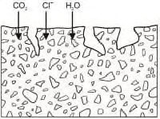
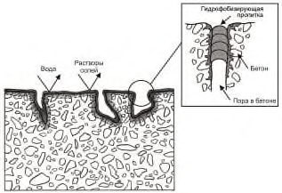
В качестве средств пропитки следует используются силаны, силоксаны и другие подобные вещества, разбавляемые водой или спиртом. Данные материалы поставляют в виде готовых к применению продуктов жидкой или пастообразной консистенции, при этом нанесение на месте осуществляется распылителем или кистью в зависимости от вязкости материала. Вязкость варьируется от водянистой до кремообразной консистенции. Высыхание всех материалов после нанесения происходит путем впитывания в бетонное основание и испарения жидкой фазы. Жидкие системы обеспечивают достаточно быстрое высыхание. Расход гидрофобизирующих пропиток водянистой консистенции можно контролировать по распространению подтеков. Расход гидрофобизирующих пропиток кремообразной консистенции контролируется по толщине наносимого слоя. Это обычно приводит к повышенной глубине проникания, что равнозначно более высокой эффективности, следовательно, лучшей и более эффективной защите основания.
Гидрофобизирующая пропитка покрывает стенки пор. Вследствие повышенного краевого угла смачивания пор вода не способна проникнуть в основание. Тем не менее водяные пары или вода под давлением проникают в основание. Гидрофобизирующие пропитки желательно использовать на вертикальных и наклонных поверхностях бетона при отсутствии фильтрации воды. На горизонтальных поверхностях гидрофобизирующие пропитки недолговечны, а в случае возможного воздействия даже временного давления воды ˗ неэффективны.
Преимущество гидрофобизирующих пропиток состоит в обеспечении водоотталкивающей поверхности практически без изменения внешнего вида и сохранении паропроницаемости основания. В случае применения гидрофобизирующих пропиток в сочетании с покрытиями основная их функция заключается в повышении прочности адгезии покрытия к поверхности основания в долгосрочной перспективе.
При нанесении гидрофобизирующих пропиток необходимо избегать высоких или низких температур основания и окружающей среды, высокой влажности воздуха и конструкции.
В отличие от гидрофобизирующих пропиток поры основания герметизируются частично или полностью, а на поверхности основания образуется несплошная тонкая пленка. Кроме того, нанесение пропитки приводит к изменению внешнего вида поверхности. Пропитка не приводит к образованию дополнительного слоя с явно выраженной толщиной.
Пропитки изготавливают на основе органических полимеров, например, эпоксидных, полиуретановых смол или акриловых дисперсий, не содержащих заполнителя или пигментов. Широко используются пропитки на основе битума. Нанесение в основном осуществляется кистью, валиком, а при больших объемах работ - напылением. Если пропитка используется в составе системы защиты поверхности, ее можно присыпать песком для обеспечения надежного сцепления между последующими слоями. Пропитки могут использоваться как при позитивном, так и негативном давлении паров воды.
Покрытия образуют сплошной защитный слой на поверхности бетона с определенной заданной толщиной. Они наносятся для исключения проникания вредных веществ, повышения механической стойкости бетона и перекрытия трещин - как подвижных, так и неподвижных. Стандартная толщина покрытий варьируется в диапазоне от 0,1 до 5,0 мм и увеличивается в зависимости от величины нагрузок и характера воздействий. Могут использоваться при позитивном давлении воды и ее паров. Адгезия к бетону на горизонтальной поверхности - не менее 2 Н/мм² .
В зависимости от предполагаемого назначения покрытия могут изготавливаться, например, на основе эпоксидных или полиуретановых смол, акрилатов и т. п. Они могут содержать мелкозернистый заполнитель, в качестве которого обычно используют кварцевый песок, диабазовая мука и пр. Данные системы защиты поверхности подходят для защиты и герметизации конструкций, работающих в условиях активного химического и физического воздействия, могут быть использованы для защиты от движения низкоскоростного транспорта, например на подземных парковках или в аналогичных условиях. При использовании системы защиты поверхности на основе полимеров для движения высокоскоростного или большегрузного транспорта, например грузового, необходимы материалы с более высокой механической стойкостью.
Для данных областей применения используются в основном асфальтовые мастики. Если для защиты от проникания предполагается использовать асфальтовую мастику, ее необходимо комбинировать с другими материалами, поскольку асфальтовая мастика не обеспечивает достаточной герметизации и защиты.
Покрытия образуют сплошной ковер заданной толщины на поверхности бетона и железобетона и наносятся для исключения проникания воды и вредных веществ. Покрытия имеют возможность перекрывать трещины с шириной раскрытия не более нормативных значений для бетонного основания.
Адгезия покрытия к бетону должна быть не менее 1,5 Н/мм² на горизонтальной, 1 Н/мм² на вертикальной, 0,75 Н/мм² на потолочной поверхностях.
Покрытия на основе цемента могут обладать пенетрирующими свойствами и проникать на определенную глубину в бетон, взаимодействуя со свободной окисью кальция. Также покрытия наносятся на чистую поверхность бетона с открытой структурой пор. После взаимодействия с основанием могут быть удалены. Существуют также бесцементные, водные растворы солей, взаимодействующие с окисью кальция в бетоне, уплотняющие поверхностную структуру бетона (ГОСТ Р 56703).
Стандартная толщина покрытий на основе цемента - 1,5-3 мм, возможно использовать в виде штукатурных слоев большей толщины.
6Принципы ремонта и усиления несущих конструкций и реализующие их методы
Таблица 3 Принципы и методы защиты и ремонта бетонных конструкций
| Принцип | Методы, реализующие принцип |
|---|---|
| 1 Защита от проникания в конструкцию агрессивных веществ | 1.1 Гидрофобизирующая пропитка* 1.2 Пропитка* 1.3 Покрытие* 1.4 Бандаж устья трещин* 1.5 Заполнение трещин, пустот или полостей* 1.6 Преобразование трещин в швы 1.7 Установка наружной облицовки* 1.8 Устройство мембран* |
| 2 Регулирование влагосодержания | 2.1 Гидрофобизирующая пропитка 2.2 Пропитка 2.3 Покрытие 2.4 Установка наружной облицовки 2.5 Электрохимическая обработка |
| 3 Восстановление бетона конструкций | 3.1 Нанесение вручную растворной смеси 3.2 Укладка (заливка) бетонной смеси 3.3 Набрызг бетонной или растворной смеси 3.4 Замена элементов |
| 4 Усиление (упрочнение) конструкций | 4.1 Добавление или замена замоноличенных или наружных арматурных стержней 4.2 Добавление арматуры, закрепляемой в заранее сформированных или пробуренных каналах 4.3 Внешнее армирование приклеиванием полос, холстов, сеток 4.4 Добавление бетона или раствора 4.5 Инъектирование в трещины, пустоты или полости 4.6 Заполнение трещин, пустот или полостей 4.7. Установка предварительно напряженной арматуры 4.8. Усиление жесткими или упругими опорами 4.9. Устройство обойм из стального проката 4.10 Усиление заменяющими конструкциями |
| 5 Повышение физической стойкости | 5.1 Покрытие 5.2 Пропитка |
| Принцип | Методы, реализующие принцип |
|---|---|
| 5.3 Добавление раствора или бетона | |
| 6 Повышение химической стойкости | 6.1 Покрытие 6.2 Пропитка 6.3 Добавление раствора или бетона |
| 7 Сохранение или восстановление пассивного состояния арматуры в бетоне | 7.1 Увеличение защитного слоя за счет дополнительного раствора или бетона 7.2 Замена загрязненного или карбонизированного бетона 7.3 Электрохимическое восстановление щелочности карбонизированного бетона 7.4 Диффузионное восстановление щелочности карбонизированного бетона 7.5 Электрохимическое извлечение хлоридов |
| 8 Повышение электрического сопротивления бетона | 8.1 Гидрофобизирующая пропитка 8.2 Пропитка 8.3 Покрытие |
| 9 Контроль анодных участков | 9.1 Покрытие арматуры слоем активного (пассивирующего) типа 9.2 Покрытие арматуры слоем барьерного (защитного) типа 9.3 Введение в бетон или нанесение на бетон ингибиторов коррозии |
При выборе метода, реализующего принцип 1 по таблице 3, следует руководствоваться приложением А.
Примечание - Принцип 1 не связывают с химическими веществами, воздействующими на бетон непосредственно у поверхности, например кислотами. Вопросы повышения стойкости к химическим веществам рассматривают в рамках принципа 6.
Системы защиты, наносимые на вертикальные и горизонтальные поверхности перекрытий, должны быть проницаемыми для водяных паров и обеспечивать возможность выхода влаги из бетона (на верхние поверхности горизонтальных бетонных элементов, например плит перекрытия автостоянок, могут наноситься непроницаемые системы защиты при наличии хорошей вентиляции нижних поверхностей). Для бетона с аномально высоким содержанием и перемещением влаги нанесение систем защиты, ограничивающих это перемещение, недопустимо.
При выборе метода, реализующего принцип 2 по таблице 3, следует, руководствоваться приложением Б.
Примечание - При контроле коррозии учитывают, что эффект высыхания бетона требует определенного периода времени. Особенно, если бетон имеет высокое содержание влаги, для достаточного снижения скорости коррозии в целях исключения повреждений может пройти несколько месяцев или даже лет. Во время планирования ремонтных мероприятий следует учесть, что в течение некоторого периода времени коррозия продолжится. При распространении коррозии за пределы защитного слоя бетона и наступлении предельных состояний конструкции принятие мер по контролю содержания влаги уже неэффективно, необходимо использовать альтернативные методы, обеспечивающие прекращение коррозии.
Восстановление бетона следует выполнять путем ручного локального ремонта, путем укладки в опалубку подвижной бетонной смеси или строительного раствора или нанесения бетона или строительного раствора методом набрызга (торкретирования), или инъектирования ремонтных составов. Восстановление бетона следует осуществлять для всей площади поверхности или ее части (так называемый локальный ремонт). При выполнении локального ремонта изношенный бетон следует удалить на необходимую глубину. Ремонтируемому участку необходимо придать простую форму, чаще всего, прямоугольную, с подрезкой «старого» бетона под прямым углом. Перед укладкой «нового» бетона требуется обработка подготовленной поверхности «старого» бетона праймерным составом на минеральной или органической основе, который улучшает адгезию контактной зоны.
При выборе метода, реализующего принцип 3 по таблице 3, следует руководствоваться приложением В.
При выборе метода, реализующего принцип 4 по таблице 3, следует руководствоваться приложением Г.
При выборе метода, реализующего принцип 5 по таблице 3, следует руководствоваться приложением Д.
При выборе метода, реализующего принцип 6 по таблице 3, следует руководствоваться приложением Е.
6.8. В рамках принципа 7 - сохранение или восстановление пассивного состояния арматуры в бетоне - следует использовать подход, заключающийся согласно ГОСТ 32016 в создании электрохимических условий, при которых поверхность арматуры поддерживается или возвращается в пассивированное состояние. Принцип 7 следует применять в качестве превентивного метода защиты до начала коррозии или для ремонта уже разрушающейся арматуры.
При выборе метода, реализующего принцип 7 по таблице 3, следует руководствоваться приложением Ж.
При выборе метода, реализующего принцип 8 по таблице 3, следует руководствоваться приложением И.
При выборе метода, реализующего принцип 9 по таблице 3, следует руководствоваться приложением К.
7Требования к расчету усиленных конструкций
7.1Общие положения
Нормативные и расчетные сопротивления бетона и арматуры усиливаемых железобетонных конструкций и элементов усилений следует назначать в соответствии с СП 63.13330 и требованиями настоящего свода правил.
В любом случае степень разгрузки конструкций следует выбирать из условия обеспечения безопасного ведения работ.
7.2Расчет по предельным состояниям первой группы
7.2.1 Расчет элементов на действие изгибающего момента
7.2.1.1 Железобетонные изгибаемые элементы, усиливаемые железобетонными обоймами, рубашками и наращиванием, рассчитываются как монолитные с учетом имеющихся дефектов и повреждений.
7.2.1.2 Расчет прочности по нормальным сечениям элементов, состоящих из разного класса бетона, разного класса арматуры, расположенных в разных уровнях поперечного сечения, в общем случае следует выполнять с использованием нелинейной деформационной модели в соответствии с СП 63.13330, учитывая коэффициенты условия работы 7.1.6, а также начальное напряженное состояние конструкции до усиления.
24 7.2.1.3 Расчет изгибаемых конструкций, усиленных обоймами, рубашками и наращиванием, с двойным армированием в усиливаемой и усиливающей частях сечения, при действии изгибающего момента в плоскости оси симметрии допускается производить в зависимости от соотношения между значениями относительной высоты сжатой зоны бетона ξ, определяемой из соответствующих условий равновесия, и значением относительной высоты сжатой зоны ξ R , определяемой по СП 63.13330.
7.2.1.4 Относительную величину сжатой зоны бетона ξ вычисляют по формуле
где x - высота сжатой зоны бетона; h 0, red - расстояние от сжатой грани до общего центра тяжести растянутой арматуры усиливаемого элемента и растянутой арматуры усиления.
7.2.1.5 При наличии в сжатой зоне расположен усиливаемого и усиливающего бетон разного класса, при определении ξ и ξ R в расчетах следует принимать расчетное сопротивление бетона b R более низкого класса.
Расстояние от сжатой грани усиливаемого элемента до общего центра тяжести вычисляют по формуле
где 0 h - расстояние от сжатой грани усиленного элемента до центра тяжести растянутой арматуры усиливаемого элемента; red a - расстояние от центра тяжести растянутой арматуры усиливаемого элемента до общего центра тяжести растянутой арматуры усиливаемого элемента и дополнительной арматуры усиления.
7.2.1.6 При различных значениях расчетного сопротивления растянутой и сжатой арматуры усиливаемого элемента s R и sc R и арматуры усиления s ad R , и sc ad R , положение их от центра тяжести red a определяется с учетом приведенной площади растянутой s red A , и сжатой арматуры s red A , ' :
где s A и sc A - площадь растянутой и сжатой арматуры усиливаемого элемента; s ad A , и sc ad A , - то же, усиливающего элемента; s R и s ad R , - расчетное сопротивление растянутой арматуры усиливаемого и усиливающего элементов; sс R и sс ad R , - то же, сжатой арматуры усиливаемого и усиливающего элементов; ad h 0, - расстояние от сжатой грани усиленного элемента до центра тяжести растянутой арматуры усиливающего элемента.
Относительную высоту сжатой зоны вычисляют по формуле
Расчет прочности изгибаемых элементов проверяют из условия:
где М - изгибающий момент от внешней нагрузки; ult M - предельный изгибающий момент, который может воспринимать сечение после усиления.
При выполнении условия ξ < ξ R предельный момент вычисляют по формуле b ad ,
7.2.1.7 Приведенное расчетное сопротивление бетона сжатой зоны усиленного элемента b red R , вычисляют по формуле
Если в результате расчета окажется, что высота сжатой зоны бетона находится только в следует принять расчетное сопротивление бетона усиления бетоне усиления, то вместо b red R , R и уточнить новую высоту сжатой зоны бетона.
Высоту сжатой зоны бетона вычисляют по формуле
В случае когда ξ < ξ R , высоту сжатой зону вычисляют по формуле
(7.11)
- 7.2.1.8 Величину предварительного напряжения σ sp и σ' sp в напрягаемой арматуре S и S' следует назначать в соответствии с требованиями СП 63.13330. При этом максимальная величина предварительного напряжения при контролируемом усилии натяжения арматуры не должна превышать: для стержней из мягких сталей - 0,9 Rs,ser , для стержней из высокопрочных сталей - 0,7 Rs,ser . Предварительное напряжение назначается не менее 0,4 Rs,ser .
- 7.2.1.9 При определении усилий напряжения арматуры необходимо учитывать дополнительные усилия, которые могут возникать из-за разницы температурных условий эксплуатации до усилия и после.
- 7.2.1.10 Потери предварительного напряжения в затяжках следует определять в соответствии с СП 63.13330 как конструкций с натяжением арматуры на бетон.
Величину предварительного напряжения при усилении следует принимать с коэффициентами условий работы для горизонтальных и шпренгельных затяжек 0,8.
- 7.2.1.11 При натяжении затяжек путем стягивания парных ветвей величина предварительного напряжения вычисляют в зависимости от тангенса угла наклона ветвей i по формуле
При этом следует исключать участки с малыми уклонами i < 0,01.
7.2.1.12 Усилие в арматуре усиления в предельной стадии следует вычислять по формуле (7.14), но принимать не более расчетного сопротивления арматуры Rsp :
где b s E E = α , Eb - модуль упругости бетона усиливаемого элемента;
; sp ad , σ - величина предварительного напряжения в арматуре усиления с учетом потерь; μ - коэффициент армирования с учетом существующей арматуры As и арматуры усиления Asp ; l - расстояние между упорами напрягаемой арматуры усиления; δ b - безразмерный коэффициент, вычисляемый по формуле
где δ a - коэффициент, принимаемый равным 820 МПа; s ad E , - модуль упругости арматуры усиления; st s E , - модуль упругости канатной арматуры, принимаемый в соответствии с СП 63.13330; sp ad A , - площадь напрягаемой арматуры усиления;
- δ sl - коэффициент, учета наличия контакта арматуры, принимаемый равным: при наличии контакта равным 0, при отсутствии - 0,55;
- Rs,ser,ad -значение сопротивления арматуры усиливающего элемента, принимаемое в соответствии с СП 63.13330.
- 7.2.1.13 При определении относительной граничной высоты сжатой зоны бетона ξ R напряжение в растянутой арматуре следует принимать большим из значений в арматуре усиливаемого либо усиливающего элемента.
- 7.2.1.14 Напряжение в арматуре усиливаемого элемента следует принимать равным расчетному сопротивлению арматуры Rs .
7.2.2 Расчет сжатых элементов, усиленных обоймами
- 7.2.2.1 Центрально сжатые со случайным эксцентриситетом и внецентренно сжатые железобетонные элементы, усиленные обоймой (наращиванием), следует рассчитывать, как монолитные, при условии обеспечения надежной передачи усилия от вышележащих конструкций и плотного прилегания обоймы к верхнему и нижнему перекрытиям, а также при условии обеспечения требуемой анкеровки продольной арматуры в соответствии с СП 63.13330.
- 7.2.2.2 При расчете прочности следует учитывать влияние прогиба усиленного элемента, в общем случае, путем расчета элемента по деформированной схеме. Допускается расчет элемента выполнять по недеформированной схеме, путем умножения расчетного эксцентриситета на коэффициент η, вычисляемый согласно 9.1.15 СП 63.13330. При гибкости усиленного элемента 20 / 0 h l и эксцентриситете продольной силы 30 / 0 h e расчет прочности усиленных элементов допускается выполнять в соответствии с п.8.1.16 СП 63.13330.
- 7.2.2.3 При определении расчетных сопротивлений бетона и арматуры усиливаемого и усиливающего элементов, кроме коэффициентов условий работы по СП 63.13330, следует учитывать следующие коэффициенты:
- γ br 0 = 1,0, γ sr 0 = 1,0 - при уровне нагрузки до усиления 65 % от предельной несущей способности и менее; γ br 0 = 0,8, γ sr 0 = 0,8 - при уровне нагрузки до усиления свыше 65 %.
- 7.2.2.4 Расчет по прочности прямоугольных сечений внецентренно сжатых элементов, усиленных обоймами, рубашками и двухсторонним наращиванием, следует проводить из условия
где N - продольная сила;
- e - расстояние от точки приложения продольной силы N до оси, параллельной прямой, ограничивающей сжатую зону и проходящей через центр тяжести сечения растянутого стержня, наиболее удаленного от указанной прямой, а при отсутствии растянутой зоны
- через центр тяжести наименее сжатого стержня; x - высота сжатой зоны, вычисляемая по формулам:
при ξ < ξ R
7.2.2.5 При гибкости усиленного элемента 20 / 0 h l и эксцентриситете продольной силы 30 / 0 h e расчет прочности усиленных элементов допускается выполнять в соответствии с 8.1.16 СП 63.13330.
7.2.2.6 Усиление внецентренно-сжатых элементов, при эксцентриситете продольной силы 6 / 0 h e , допускается выполнять на локальном участке, в пределах одного этажа либо в зоне конструкции.
При усилении рубашкой или обоймой на локальном участке конструкций высоту обоймы допускается выполнять с заведением за участок усиления не менее: an l продольной арматуры рубашки; t 5 , где t - толщина рубашки; b - ширина грани или диаметра усиливаемого элемента;
500 мм.
7.2.2.7 Прочность монолитных обойм, работающих на раскалывание, следует вычислять по формуле
где Ab - наименьшая площадь вертикального сечения обоймы с расчетной длиной равной l ef ;
- n - число стержней поперечной арматуры, расположенной в расчетной части обоймы усиления;
- k - коэффициент, зависящий от типа поперечного армирования, принимаемый равным: 0,5
- для хомутов, 0,4 - для сеток из отдельных стержней;
As - площадь одного поперечного стержня обоймы усиления;
Rbt - расчетное сопротивление бетона на растяжение, принимаемое в соответствии с классом бетона обоймы по СП 63.13330. При применении бетона класса выше В30 расчетное сопротивление следует принимать как для бетона класса В30;
- Rs - расчетное сопротивление поперечной арматуры обоймы принимаемое, в соответствии с классом арматуры по СП 63.13330, но не более 300 МПа.
- 7.2.2.8 Расчетную длину обоймы усиления рассчитывают по формуле
где l loc - длина локального участка колонны, требующая усиления, принимаемая не менее наибольшего размера стороны сечения колонны; lan - длина заведения обоймы усиления, принимаемая согласно 8.2.2.6.
7.2.3 Расчет сжатых элементов усиленных стальными распорками
7.2.3.1 При проектировании внецентренно-сжатых элементов, усиленных распорками, растянутые ветви не следует учитывать в расчете.
7.2.3.2 Расчет сжатых элементов, усиленных распорками из уголков, следует выполнять в соответствии с СП 16.13330, с учетом коэффициента условия работы γ sr = 0,9. При этом расчетную длину ветвей распорок следует принимать равной:
- расстоянию между точками упора в бетон - при отсутствии заполнения зазора раствором между усиливаемым элементом и распоркой;
- расстоянию между осями планок - при наличии заполнения зазора, а также натяжения поперечных планок, расстоянию между осями планок.
7.2.3.3 Сжатые элементы при действии до усиления полной нагрузки выполняют с применением предварительно напрягаемых распорок в качестве разгружающих элементов. Разгружающее усилие следует вычислять по формуле
где σ sp - значение предварительного напряжения в распорках, с учетом потерь;
Acb
- площадь сечения сжатых распорок.
7.2.4 Расчет на действие поперечных сил и продавливание
- 7.2.4.1 Расчет прочности железобетонных элементов, усиленных поперечным армированием с начальным предварительным напряжением, следует выполнять как для обычного армирования, без учета предварительного напряжения.
7.2.4.2 Расчет прочности железобетонных элементов, усиленных монолитными рубашками либо обоймами, следует выполнять как монолитных, согласно СП 63.13330.
- 7.2.4.3 Прочность плит на продавливание, усиленных сквозными шпильками, следует рассчитывать по общим правилам в соответствии с требованиями СП 63.13330 и настоящего свода правил.
- 7.2.4.4 При усилении поперечным армированием действующее продавливающее усиление до усиления не должно превышать расчетной несущей способности плиты.
- 7.2.4.5 Количество поперечной арматуры, с учетом арматуры усиления, учитываемое в расчете прочности, следует принимать в диапазоне 0,5 Fb,ult ≤ Fsw + Fsw,ad ≤ 0,9 Fb,ult .
7.3Расчет конструкций по предельным состояниям второй группы
7.3.1 Расчет по трещиностойкости
7.3.1.1 Расчет усиленных железобетонных конструкций по трещиностойкости следует выполнять по общим правилам в соответствии с СП 63.13330 с учетом начального напряженно - деформированного состояния конструкции до усиления.
7.3.1.2 Расчет по образованию и раскрытию трещин в изгибаемых, внецентренно сжатых и внецентренно растянутых элементах, усиленных обоймами или рубашками из монолитного железобетона, следует выполнять в соответствии с СП 63.13330 для сечений после усиления. При этом, если перед усилением растянутой зоны установкой дополнительной арматуры с обетонированием в усиливаемой конструкции имелись нормальные трещины, момент сопротивления приведенного сечения для крайнего растянутого волокна определяется без учета площади сечения растянутой зоны бетона усиливаемой конструкции.
7.3.1.3 Расчет по образованию трещин, нормальных к продольной оси железобетонных конструкций, усиленных под нагрузкой, рекомендуется выполнять на основе деформационной модели. Внутренние усилия, соответствующие предельным деформациям растяжения крайнего волокна железобетонной конструкции, характеризуют образование нормальных трещин в сечении.
- 7.3.1.4 Значение предельной ширины раскрытия трещин усиленных элементов следует принимать в зависимости от условий эксплуатации согласно СП 63.13330 и СП 28.13330.
7.3.2 Расчет по деформациям
- 7.3.2.1 Расчет усиленных железобетонных конструкций по прогибам следует выполнять по общим правилам в соответствии с СП 63.13330 с учетом начального деформированного состояния конструкции до усиления.
- 7.3.2.2 Расчет по деформациям в общем случае следует выполнять с использованием нелинейной деформационной модели, с учетом начальной кривизны железобетонного элемента до усиления на нагрузки, действующие в момент усиления, и кривизны усиленного элемента на дополнительные нагрузки.
- 7.3.2.3 Усилия в усиляемой конструкции от дополнительных нагрузок при конструкциях с упругими опорами, следует распределять пропорционально их жесткости с учетом возможного образования трещин в упруго-пластической зоне.
- 7.3.2.4 Деформации железобетонных конструкций, усиленных под нагрузкой с изменением расчетной схемы, определяют суммированием от нагрузки, действующей до усиления, при первоначальной расчетной схеме и от нагрузки, приложенной к конструкции после усиления, при измененной расчетной схеме.
8Контроль качества работ по ремонту и усилению
8.1Общие положения
- размерную, химическую, электрохимическую и физико-механическую совместимость выбранных материалов с основанием;
- технологию нанесения материалов, условия производства работ, условия эксплуатации конструкций и нагружение ремонтной системы;
- обеспечение требуемого состояния основания с точки зрения его чистоты, шероховатости, наличия микротрещин, значительных трещин, прочности на растяжение и сжатие, наличия хлоридов или других загрязняющих веществ, их глубину проникания, глубину карбонизации, содержание влаги, температуру, степень и скорость коррозии арматуры;
- соблюдение заданных свойств поставляемых материалов и систем при нанесении и в отвержденном состоянии с точки зрения выполнения ими защиты и ремонта конструкции;
- наличие требуемых условий хранения и нанесения материалов, включая температуру окружающей среды, влажность и точку росы;
- защиту от ветра, солнца, мороза, атмосферных осадков;
- квалификационный уровень производителей работ;
- мероприятия приемочного контроля, производства работ.
8.2Гидрофобизирующая обработка и пропитка
Таблица 4 Свойства поверхности основания до и во время нанесения пропитки
| Свойство | Метод контроля | Стандарт | Необходимость |
|---|---|---|---|
| Состояние поверхности основания | Простукивание молотком | ГОСТ 28574 | ■ |
| Чистота основания | Визуальный осмотр, удаление пыли пылесосом, протиркой влажным материалом и т. д. | - | ■ |
| Поверхностная прочность основания | Определение поверхностной прочности | ГОСТ 22690 | ♦ |
| Содержание влаги в поверхности основания | Метод высушивания, диэлькометрический метод | ГОСТ 12730.2, ГОСТ 21718 | ♦ |
| Температура поверхности основания | Инструментальный метод исследования (термометр, пирометр) | - | ■ |
| Глубина карбонизации | Извлечение образцов бетона, тест на рН | ГОСТ 31383 | ♦ |
| Содержание хлоридов | Извлечение образцов бетона. Химический анализ проб бетона | ГОСТ 31383, ГОСТ 5382 | ♦ |
Таблица 5 Предельные условия до и во время нанесения
| Свойство | Метод контроля | Стандарт | Необходимость |
|---|---|---|---|
| Температура | Инструментальный метод исследования (термометр, пирометр) | - | ■ |
| Относительная влажность | Инструментальный метод исследования (гигрометр) | - | ■ |
| Дождь | Визуальный осмотр | - | ■ |
| Скорость ветра | Инструментальный метод исследования (анемометр) | - | ■ |
| Точка росы | Инструментальный метод исследования (термометр, пирометр, гигрометр) | - | ♦ |
Таблица 6 Свойства гидрофобизирующей пропитки после нанесения
| Свойство | Метод контроля | Стандарт | Необходимость |
|---|---|---|---|
| Глубина проникания пропиточного состава | Извлечение образцов бетона и определение смачиваемости | ГОСТ 31383, 11.3.4.5 и 11.3.4.6 | ♦ |
| Водопроницаемость | Бетон с пропиткой по методу «мокрого пятна», трубка Карстена | ГОСТ 31383 | ■ |
Примечание к таблицам 4-6 - Методы контроля качества содержат следующие варианты:
- ■ - выполняется для всех испытаний;
- ♦ - осуществляется при наличии указаний.
8.3Параметры контроля качества до и после нанесения покрытия
8.3.1 Шероховатость
- 8.3.1.1 Определяемые параметры шероховатости устанавливают по ГОСТ 2789 при помощи приборов профильного метода [13].
- 8.3.1.2 Шероховатость поверхности также может определяться согласно нормативнотехнической документации так называемым методом «песчаного пятна». Песок насыпается на бетонную поверхность, а затем при помощи деревянного штампа формируется равномерное пятно. После этого при помощи весов определяют расход и рассчитывают шероховатость поверхности.
8.3.2 Температура точки росы
- 8.3.2.1 Нанесение продукта для ремонта или защиты не допускается, если температура окружающей среды в сухих условиях превышает температуру точки росы менее чем на 3 °C. Температуру точки росы следует определять в зависимости от температуры окружающей среды в сухих условиях и относительной влажности по таблице 7.
- 8.3.2.2 Температура воздуха должна измеряться при помощи ртутного термометра, отвечающего требованиям ГОСТ 112, или пирометра. Термометр должен иметь требуемую точность ± 0,5 °C. Температура поверхности может измеряться при помощи пирометра с требуемой точностью ± 0,5 °C. Относительная влажность должна измеряться гигрометрами.
Таблица 7 Значения температуры точки росы в зависимости от температуры окружающей среды в сухих условиях, а также при приведенных значениях относительной влажности
| Температура окружающей среды в сухих условиях | Температура точки росы (°C) для относительной влажности окружающей среды от 40 %до 100% | Температура точки росы (°C) для относительной влажности окружающей среды от 40 %до 100% | Температура точки росы (°C) для относительной влажности окружающей среды от 40 %до 100% | Температура точки росы (°C) для относительной влажности окружающей среды от 40 %до 100% | Температура точки росы (°C) для относительной влажности окружающей среды от 40 %до 100% | Температура точки росы (°C) для относительной влажности окружающей среды от 40 %до 100% | Температура точки росы (°C) для относительной влажности окружающей среды от 40 %до 100% |
|---|---|---|---|---|---|---|---|
| Температура окружающей среды в сухих условиях | 40% | 50% | 60% | 70% | 80% | 90% | 100% |
| 35 | 19,4 | 23,0 | 26,1 | 28,7 | 31,0 | 33,1 | 35 |
| 30 | 15,0 | 18,5 | 21,4 | 23,9 | 26,2 | 28,2 | 30 |
| 25 | 10,5 | 13,9 | 16,7 | 19,6 | 20,1 | 23,2 | 25 |
| 20 | 6,0 | 9,3 | 12,0 | 14,4 | 16,5 | 18,3 | 20 |
| 15 | 1,5 | 4,2 | 7,3 | 9,6 | 11,6 | 13,4 | 15 |
| 10 | -3,0 | 0,1 | 2,6 | 4,8 | 6,7 | 8,5 | 10 |
| 5 | -7,0 | -4,7 | -2,0 | 0 | 1,9 | 3,5 | 5 |
8.3.3 Толщина свеженанесенного и затвердевшего покрытия
8.3.3.1 Толщину покрытия следует измерять до нанесения и после высыхания по ГОСТ 31993 с помощью микрометров или многооборотных индикаторов с круговой шкалой.
8.3.3.2 Суть метода состоит в том, что проводят измерения по покрытию, затем покрытие удаляют и измерения повторяют.
8.3.3.3 Толщину свеженанесенного покрытия следует измерять как во время, так и после нанесения согласно нормативно-технической документации.
8.3.3.4 В соответствии с ГОСТ 31993 толщину покрытия во время нанесения можно определить либо по общему расходу, либо для невысохшей пленки с использованием гребенчатого шаблона. Вместо гребенчатых шаблонов могут использоваться толщиномеры колесного типа.
8.3.3.5 Толщину затвердевшего покрытия можно измерить на месте путем устройства Vобразного надреза и измерения длины видимой поверхности надреза при помощи увеличительного стекла или путем снятия покрытия. Если угол надреза известен, толщину можно вычислить по закону Пифагора. Также в покрытии может проделываться небольшое отверстие для измерения его толщины покрытия при помощи микроскопического нутромера.
8.3.3.6 Допускается снять покрытие на небольшом участке поверхности и измерить толщину микрометром. Кроме толщины покрытия, необходимо выполнить качественную оценку адгезии.
8.3.3.7 Альтернативным методом является высверливание из конструкции небольших цилиндрических образцов (кернов) и определение толщины покрытия в лаборатории с помощью штангенциркуля или микроскопа.
8.3.3.8 Применительно к гидрофобизирующим пропиткам высверливание кернов является единственным надежным методом определения глубины пропитки. Для этого образец раскалывают на две половины, и на поверхности разбрызгивается вода. Гидрофобные зоны останутся более светлыми, поскольку обладают водоотталкивающими свойствами, а негидрофобные зоны приобретут темный цвет в результате водонасыщения.
8.3.3.9 Если необходимо исследовать пленкообразующую систему защиты поверхности, ее толщину можно легко определить по поверхности надреза высверленного образца.
8.3.4 Внешний вид покрытия
8.3.4.1 Внешний вид пленкообразующего покрытия определяется согласно ГОСТ 9.407, в котором различаются следующие дефекты внешнего вида: степень пузырения, степень растрескивания, степень отслаивания, степень сморщивания.
8.3.4.2 Выводы относительно дефекта каждого типа делают на основе эталонных изображений, приведенных в ГОСТ 9.407. Данные изображения также могут использоваться в качестве эталонов при автоматизированном анализе изображений.
8.3.4.3 В рамках данной стандартизированной системы проводится различие между количеством дефектов, размером дефектов и относительными изменениями между двумя разными периодами наблюдений. В таблицах 8-10 представлен краткий обзор соответствующих нормированных значений.
Таблица 8 Оценка внешнего вида по количеству дефектов
| Нормированное значение | Количество дефектов |
|---|---|
| 0 | Видимые дефекты отсутствуют |
| 1 | Очень небольшое количество дефектов |
| 2 | Небольшое, но заметное количество дефектов |
| 3 | Умеренное количество дефектов |
| 4 | Значительное количество дефектов |
| 5 | Большое количество дефектов |
Таблица 9 Оценка внешнего вида по размеру дефектов
| Нормированное значение | Размер дефектов |
|---|---|
| 0 | Невидимы при 10-кратном увеличении |
| 1 | Видимы только при 10-кратном увеличении |
| 2 | Едва видимы невооруженным глазом |
| 3 | Четко видимы невооруженным глазом |
| 4 | Размер в диапазоне от 0,5 до 5 мм |
| 5 | Размер более 5 мм |
Таблица 10 Оценка внешнего вида по интенсивности изменений
| Нормированное значение | Интенсивность изменений |
|---|---|
| 0 | Видимые изменения внешнего вида отсутствуют |
| 1 | Очень незначительные изменения, едва видимые |
| 2 | Небольшие изменения, хорошо видимые |
| 3 | Умеренные изменения, очень хорошо видимые |
| 4 | Сильные и явно видимые изменения |
| 5 | Очень сильные изменения |
- 8.3.4.4 В акте осмотра должны быть указаны тип дефекта и дополнительно классификация согласно ранее указанной системе.
- 8.3.4.5 Для определения некоторых дефектов внешнего вида приняты:
- степень выветривания - в соответствии с ГОСТ 9.072;
- степень меления с применением фотобумаги - в соответствии с ГОСТ 16976.
8.3.5 Адгезия покрытия
- 8.3.5.1 Величину адгезии покрытия к основанию следует определять путем количественного анализа методом испытаний на одноосное растяжение или путем качественного анализа методом решетчатого надреза согласно ГОСТ 28574.
- 8.3.5.2 Контроль методом решетчатого надреза обеспечивает качественный анализ степени адгезии покрытия после выполнения надрезов в виде сетки из не менее шести перпендикулярных линий, обработки поверхности мягкой сухой кистью и последующей оценки адгезии в баллах по классификации, приведенной в таблице 11.
Таблица 11 Классификация результатов контроля методом решетчатого надреза
| Балл | Описание | Внешний вид поверхности в зоне надрезов, где произошло отслаивание |
|---|---|---|
| 1 | Края надрезов полностью гладкие, нет признаков отслаивания ни в одном квадрате решетки | |
| 2 | Незначительное отслаивание покрытия в виде мелких чешуек в местах пересечения линий решетки. Нарушение наблюдается не более чем на 5 %поверхности решетки | |
| 3 | Частичное или полное отслаивание покрытия вдоль линий надрезов решетки или в местах их пересечения. Нарушение наблюдается не менее чем на 5 %ине более чем на 35% поверхности решетки | |
| 4 | Полное отслаивание покрытия или частичное, превышающее 35 %поверхности решетки | - |
8.4Нанесение покрытий
Таблица 12 Свойства поверхности до и во время нанесения
| Свойство | Метод контроля | Стандарт | Необходимость |
|---|---|---|---|
| Состояние поверхности основания | Простукивание молотком | ГОСТ 28574 | ■ |
| Чистота основания | Визуальный осмотр, удаление пыли пылесосом, протиркой влажным материалом и т. д. | - | ■ |
| Ровность поверхности | Визуальный осмотр, рейка | - | ■ |
| Шероховатость | Визуальный осмотр, измерение профильным методом | ГОСТ 2789 | ♦ |
| Поверхностная прочность | Определение поверхностной прочности | ГОСТ 22690 | ♦ |
| Движение трещин | Механические маяки, измерители или линейные регулируемые дифференциальные датчики- преобразователи | Приведены в [7] | □ |
| Содержание влаги в зоне поверхности | Метод высушивания, диэлькометрический метод | ГОСТ 12730.2, ГОСТ 21718 | ♦ |
| Температура поверхности | Инструментальный метод исследования (термометр, пирометр) | - | ■ |
| Проникание вредных веществ (углекислого газа) | Диффузионная проницаемость покрытия | ГОСТ 31383 | ♦ |
Таблица 13 Предельные условия до и во время нанесения
| Свойство | Метод контроля | Стандарт | Необходимость |
|---|---|---|---|
| Температура | Инструментальный метод исследования (термометр, пирометр) | - | ■ |
| Относительная влажность | Инструментальный метод исследования (гигрометр) | - | ♦ |
| Дождь | Визуальный осмотр | - | ■ |
| Скорость ветра | Инструментальный метод исследования (анемометр) | - | ■ |
| Точка росы | Инструментальный метод исследования (термометр, пирометр, гигрометр) | - | ♦ |
| Толщина свеженанесенного покрытия | Инструментальный метод исследования (измерительный гребень) | - | ♦ |
Таблица 14 Свойства покрытия после нанесения
| Свойство | Метод контроля | Стандарт | Необходимость |
|---|---|---|---|
| Толщина затвердевшего покрытия | Контроль микрометрами | - | ■ |
| Внешний вид покрытия | Визуальный осмотр | ГОСТ 9.407 | ■ |
| Водопроницаемость | Водонепроницаемость бетона с покрытием по мокрому пятну, трубка Карстена | ГОСТ 31383 | ♦ |
| Адгезия покрытия | Метод определения адгезии по силе отрыва; по решетчатым надрезам | ГОСТ 28574, ГОСТ 15140 | ■ |
Примечание к таблицам 12-14 - Методы контроля качества содержат следующие варианты:
- ■ - выполняется для всех испытаний;
- ♦ - осуществляется при наличии указаний;
- □ - производится в особых случаях.
8.5Заполнение трещин, пустот или расселин
Таблица 15 Свойства поверхности до и во время выполнения работ
| Свойство | Метод контроля | Стандарт | Необходимость |
|---|---|---|---|
| Чистота | Визуальный осмотр | - | ♦ |
| Ширина и глубина трещин | Ультразвуковые измерения, извлечение кернов, визуальный осмотр | - | ♦ |
| Движения трещин | Механические измерители или линейные регулируемые дифференциальные датчики- преобразователи | Приведены в [7] | ♦ |
| Содержание влаги в трещинах и окружающем бетоне | Метод высушивания, диэлькометрический метод | ГОСТ 12730.2, ГОСТ 21718 | ♦ |
| Температура поверхности | Инструментальный метод исследования (термометр, пирометр) | - | ♦ |
| Загрязнение трещин | Извлечение кернов, химический анализ | - | ♦ |
Таблица 16 Предельные условия до и во время выполнения работ
| Свойство | Метод контроля | Стандарт | Необходимость |
|---|---|---|---|
| Температура | Инструментальный метод исследования (термометр, пирометр) | - | ■ |
| Относительная влажность | Инструментальный метод исследования (гигрометр) | - | ♦ |
| Дождь | Визуальный осмотр | - | ♦ |
Таблица 17 Свойства поверхности после выполнения работ
| Свойство | Метод контроля | Стандарт | Необходимость |
|---|---|---|---|
| Водопроницаемость | По методу «мокрого пятна», трубка Карстена | ГОСТ 31383 | ♦ |
| Качество заполнения трещин | Извлечение кернов, ультразвуковые измерения | - | ♦ |
| Адгезия заполняющего материала к поверхности | Осмотр высверленных кернов и визуальный осмотр | - | □ |
Примечание к таблицам 15-17 - Методы контроля качества содержат следующие варианты:
■ - выполняется для всех испытаний;
♦ - осуществляется при наличии указаний;
□ - производится в особых случаях.
8.6Нанесение строительного раствора или бетона
Таблица 18 Свойства поверхности до и во время нанесения
| Свойство | Метод контроля | Стандарт | Необходимость |
|---|---|---|---|
| Поверхностное нарушение сцепления | Простукивание молотком | ГОСТ 28574 | ■ |
| Чистота | Визуальный осмотр | - | ■ |
| Шероховатость | Визуальный осмотр, измерение профильным методом | ГОСТ 2789 | ♦ |
| Поверхностная прочность | Определение поверхностной прочности | ГОСТ 22690 | ♦ |
| Движения трещин | Механические измерители или линейные регулируемые дифференциальные датчики- преобразователи | Приведены в [7] | □ |
| Вибрации в конструкции | Инструментальный метод исследования (акселерометр) | ГОСТ Р 52892 | □ |
| Температура поверхности | Инструментальный метод исследования (термометр, пирометр) | - | ■ |
| Глубина карбонизации | Извлечение образцов бетона | ГОСТ 31383 | □ |
| Содержание хлоридов | Извлечение образцов бетона | ГОСТ 31383, ГОСТ 5382 | □ |
| Проникновение вредных веществ | Извлечение образцов бетона | ГОСТ 31383 | □ |
| Электрическое сопротивление | Метод Веннера | - | □ |
| Прочность на сжатие | Извлечение кернов, молоток Шмидта | ГОСТ 28570, ГОСТ 22690 | ♦ |
Таблица 19 Предельные условия до и во время нанесения
| Свойство | Метод контроля | Стандарт | Необходимость |
|---|---|---|---|
| Температура | Инструментальный метод исследования (термометр, пирометр) | - | ■ |
| Дождь | Визуальный осмотр | - | ■ |
| Консистенция бетонной смеси | Испытание на осадку конуса, растекаемость | ГОСТ 10181 | ■ |
| Консистенция строительного раствора | Испытание на осадку конуса, растекаемость | ГОСТ 10181 | ■ |
| Содержание воздуха | Нагнетательный бак | ГОСТ 10181 | ♦ |
| Толщина бетона и толщина защитного слоя | Магнитный или радиационный метод | ГОСТ 22904, ГОСТ 17625 | ■ |
| Прочность на сжатие | Испытание образцов, склерометр | ГОСТ 28570, ГОСТ 22690 | ■ |
Таблица 20 Свойства строительного раствора/бетона после нанесения
| Свойство | Метод контроля | Стандарт | Необходимость |
|---|---|---|---|
| Поверхностное нарушение сцепления | Простукивание молотком | ГОСТ 28574 | ■ |
| Электрическое сопротивление | Метод Веннера | - | □ |
| Водопроницаемость | Водонепроницаемость бетона с покрытием по мокрому пятну, трубка Карстена | ГОСТ 31383 | ♦ |
| Защитный слой бетона | Извлечение кернов, визуальный осмотр, магнитные методы | ГОСТ 22904, ГОСТ 17625 | ■ |
| Адгезия основания материала к поверхности | Осмотр кернов и визуальный осмотр | - | ■ |
| Прочность на сжатие | Образцы-керны, склерометр | ГОСТ 28570, ГОСТ 22690 | ■ |
| Плотность | Метод высушивания, радиоизотопный метод | ГОСТ 12730.1, ГОСТ 17623 | ■ |
| Трещины, обусловленные усадкой раствора | Визуальный осмотр | - | ■ |
| Пустоты за материалами локального ремонта | Ультразвуковые измерения, георадар (GPR), извлечение кернов | - | ♦ |
| Цвет и текстура поверхности | Визуальный осмотр | - | ♦ |
Примечание к таблицам 18-20 - Методы контроля качества содержат следующие варианты:
■ - выполняется для всех испытаний;
♦ - осуществляется при наличии указаний;
□ - производится в особых случаях.
8.7Добавление или замена арматурных стержней
Таблица 21 Свойства поверхности до выполнения работ
| Свойство | Метод контроля | Стандарт | Необходимость |
|---|---|---|---|
| Чистота существующих арматурных стержней | Визуальный осмотр | - | ■ |
| Размеры существующих арматурных стержней | Визуальный осмотр | - | ■ |
| Состояние коррозии существующих арматурных стержней | Потенциал полуэлемента, визуальный осмотр | Приведены в [8] | ♦ |
Таблица 22 Предельные условия до и во время выполнения работ
| Свойство | Метод контроля | Стандарт | Необходимость |
|---|---|---|---|
| Дождь | Визуальный осмотр | - | ■ |
| Положение арматуры | Визуальный осмотр, магнитные и радиационные методы | ГОСТ 22904, ГОСТ 17625 | ■ |
Таблица 23 Свойства замененных арматурных стержней после выполнения работ
| Свойство | Метод контроля | Стандарт | Необходимость |
|---|---|---|---|
| Положение арматуры | Визуальный осмотр, магнитные и радиационные методы | ГОСТ 22904, ГОСТ 17625 | ■ |
| Адгезия к бетону | Испытания на выдергивающее усилие | ГОСТ Р 56731 | ♦ |
8.8Добавление арматуры, заанкерованной в отверстия
Таблица 24 Свойства поверхности до и во время выполнения работ
| Свойство | Метод контроля | Стандарт | Необходимость |
|---|---|---|---|
| Чистота | Визуальный осмотр | - | ■ |
| Шероховатость | Визуальный осмотр, измерение профильным методом | ГОСТ 2789 | ♦ |
| Содержание влаги в зоне поверхности | Метод высушивания, диэлькометрический метод | ГОСТ 12730.2, ГОСТ 21718 | ♦ |
| Размеры существующих арматурных стержней | Визуальный осмотр | - | ■ |
| Состояние коррозии существующих арматурных стержней | Потенциал полуэлемента, визуальный осмотр | Приведены в [8] | ♦ |
| Чистота арматурных стержней | Визуальный осмотр | - | ■ |
Таблица 25 Предельные условия до и во время выполнения работ
| Свойство | Метод контроля | Стандарт | Необходимость |
|---|---|---|---|
| Температура | Инструментальный метод исследования (термометр, пирометр) | - | ■ |
| Относительная влажность | Инструментальный метод исследования (гигрометр) | - | ■ |
| Дождь | Визуальный осмотр | - | ♦ |
| Консистенция строительного раствора, используемого для анкеровки арматурных стержней | Испытание на осадку конуса, растекаемость | ГОСТ 10181 | ■ |
| Положение арматуры | Визуальный осмотр, магнитные и радиационные методы | ГОСТ 22904, ГОСТ 17625 | ♦ |
Таблица 26 Свойства арматуры, заанкерованной в отверстия после выполнения работ
| Свойство | Метод контроля | Стандарт | Необходимость |
|---|---|---|---|
| Положение арматуры | Визуальный осмотр, магнитные и радиационные методы | ГОСТ 22904, ГОСТ 17625 | ■ |
| Адгезия к бетону | Испытания на выдергивающее усилие | - | ♦ |
Примечание к таблицам 24-26 - Методы контроля качества содержат следующие варианты:
■ - выполняется для всех испытаний;
♦ - осуществляется при наличии указаний.
8.9Армирование приклеиваемыми пластинами (ламинатами)
Таблица 27 Свойства поверхности основания до и во время выполнения работ
| Свойство | Метод контроля | Стандарт | Необходимость |
|---|---|---|---|
| Состояние поверхности основания | Простукивание молотком | ГОСТ 28574 | - |
| Чистота поверхности и приклеиваемых пластин | Визуальный осмотр, удаление пыли, пылесосом, протиркой влажным материалом и т. д. | - | - |
| Ровность поверхности | Визуальный осмотр, рейка | - | - |
| Шероховатость основания | Визуальный осмотр, измерение профильным методом | ГОСТ 2789 | - |
| Поверхностная прочность основания | Определение поверхностной прочности | ГОСТ 22690 | - |
| Движения трещин | Механические измерители или линейные регулируемые дифференциальные датчики- преобразователи | Приведены в [7] | ♦ |
| Вибрации в конструкции | Инструментальный метод исследования (акселерометр) | ГОСТ Р 52892 | ♦ |
| Глубина карбонизации | Извлечение образцов бетона | ГОСТ 31383 | ♦ |
| Содержание влаги в зоне поверхности | Метод высушивания, диэлькометрический метод | ГОСТ 12730.2, ГОСТ 21718 | ■ |
| Температура поверхности | Инструментальный метод исследования (термометр, пирометр) | - | ■ |
| Содержание хлоридов | Извлечение образцов бетона | ГОСТ 31383, ГОСТ 5382 | ♦ |
| Состояние коррозии существующих арматурных стержней | Потенциал полуэлемента, визуальный осмотр | Приведены в [8] | ♦ |
| Прочность на сжатие | Извлечение кернов, склерометр | ГОСТ 28570, ГОСТ 22690 | ♦ |
Таблица 28 Предельные условия до и во время выполнения работ
| Свойство | Метод контроля | Стандарт | Необходимость |
|---|---|---|---|
| Температура | Инструментальный метод исследования (термометр, пирометр) | - | ■ |
| Относительная влажность | Инструментальный метод исследования (гигрометр) | - | ■ |
| Дождь | Визуальный осмотр | - | ■ |
| Точка росы | Термометр, пирометр, гигрометр | - | ■ |
Таблица 29 Свойства приклеиваемых армирующих пластин после установки
| Свойство | Метод контроля | Стандарт | Необходимость |
|---|---|---|---|
| Толщина покрытия, нанесенного на приклеиваемые панели | Контроль микрометрами, общий уровень расхода | - | ♦ |
| Пустоты между поверхностью и приклеиваемой пластиной | Ударный эхо-метод, простукивание молотком, ультразвуковые измерения | ГОСТ 28574 | ■ |
| Несущая способность | Испытания под нагрузкой | - | ♦ |
Примечание к таблицам 27-29 - Методы контроля качества содержат следующие варианты:
■ - выполняется для всех испытаний;
♦ - осуществляется при наличии указаний.
8.10Нанесение покрытия на арматуру
Таблица 30 Свойства поверхности до и во время выполнения работ
| Свойство | Метод контроля | Стандарт | Необходимость |
|---|---|---|---|
| Чистота | Визуальный осмотр, удаление пыли пылесосом, протиркой влажным материалом и т. д. | - | ■ |
| Вибрации в конструкции | Инструментальный метод исследования (акселерометр) | ГОСТ Р 52892 | ♦ |
| Температура поверхности | Инструментальный метод исследования (термометр, пирометр) | - | ■ |
Таблица 31 Предельные условия до и во время выполнения работ
| Свойство | Метод контроля | Стандарт | Необходимость |
|---|---|---|---|
| Температура | Инструментальный метод исследования (термометр, пирометр) | - | ■ |
| Относительная влажность | Инструментальный метод исследования (гигрометр) | - | ■ |
| Дождь | Визуальный осмотр | - | ■ |
| Точка росы | Инструментальный метод исследования (термометр, пирометр, гигрометр) | - | ♦ |
Таблица 32 Свойства покрытия после выполнения работ
| Свойство | Метод контроля | Стандарт | Необходимость |
|---|---|---|---|
| Толщина затвердевшего покрытия | Контроль микрометрами, общий уровень расхода | - | ♦ |
| Внешний вид покрытия | Визуальный осмотр | - | ■ |
Примечание к таблицам 30-32 - Методы контроля качества содержат следующие варианты:
■ - выполняется для всех испытаний;
♦ - осуществляется при наличии указаний.
9Требования техники безопасности при выполнении работ по ремонту и усилению
- осуществлять производственный контроль соблюдения норм и правил (санитарных, строительных и т. д.) при производстве ремонтных работ в соответствии с СП 1.1.1058;
- предусматривать на рабочих местах воздухообмен, обеспечивающий содержание вредных химических веществ в воздухе рабочей зоны в концентрациях, не превышающих предельно допустимых значений [9], [10];
- выполнять все работы в специальной одежде и применять средства индивидуальной защиты рук, органов зрения, дыхания и слуха в соответствии с характером выполняемых ремонтных работ;
- применять ручной электрои пневмоинструмент/оборудование, с параметрами производственного шума и вибрации, не превышающими предельно допустимые уровни [11], [12]; соблюдать режимы труда и отдыха работников при использовании виброопасного инструмента;
- приступать к работам по наряду-допуску;
- выполнять работы в условиях достаточной освещенности, при включенном рабочем и аварийном освещении;
- знать местонахождение ближайшего и других аварийных выходов;
- хранить на рабочем месте материалы в количестве сменной нормы, не загромождая при этом проходы;
- проводить ремонтные работы в строгом соответствии с требованиями, предусмотренными инструкциями по охране труда для рабочей специальности.
- все применяемые при выполнении работ материалы должны иметь санитарноэпидемиологические заключения о соответствии санитарным правилам;
- количество используемых материалов должно быть незначительным (средний расход материалов не превышает нескольких килограммов на условный квадратный метр площадки работ);
- при производстве работ используются только экологически чистые энергоносители электроэнергия и сжатый воздух;
- виды и характеристики используемых материалов, а также технология их применения исключают возможность образования вредных химических веществ в воздухе рабочей зоны в концентрациях, превышающих предельно допустимые значения [9], [10];
- устройство защитных ограждений на участках выполнения ремонтных работ;
- применение защитной пленки при складировании на рабочем месте пылящих материалов.
- разработать проект производства работ по ремонту и усилению;
- проводить санитарно-профилактические мероприятия по обеспечению безопасных условий труда и предупреждения воздействия вредных факторов;
- обеспечить постоянное поддержание условий труда, отвечающих требованиям санитарных правил. При невозможности соблюдения предельно допустимых уровней и концентраций вредных производственных веществ на рабочих местах (в рабочих зонах) работодатель должен обеспечить работников средствами индивидуальной защиты;
- установить границы территории, выделяемой для производства, и проводить необходимые подготовительные работы (установка защитных ограждений, предупредительных знаков и т. д.);
- организовать производственный контроль за соблюдением условий труда по показателям вредности и опасных веществ в производственной среде, тяжести и напряженности труда;
- проводить инструментальные исследования и лабораторный контроль вредных веществ в производственной среде;
- обеспечивать освещенность на участках работ не менее нормируемой;
- обеспечить рабочие места, где применяются или приготовляются клеи, мастики, краски и другие материалы, выделяющие вредные вещества, механической системой вентиляции, средствами индивидуальной защиты;
- обеспечить рабочие места оборудованием или механизмами, генерирующими шум и вибрацию, не превышающими санитарные нормы. Для устранения вредного воздействия шума и вибрации применять технические средства, средства индивидуальной защиты, организационные мероприятия (рациональный режим труда и отдыха, лечебнопрофилактические мероприятия);
- обеспечивать работающих санитарно-бытовыми помещениями с учетом производственных процессов и их санитарной характеристики;
- предусматривать места для отдыха вблизи производственных участков.
АПриложение А. Методы, реализующие принцип 1 - защита от проникания в конструкцию агрессивных веществ
А.1Метод 1.1 - Гидрофобизирующая пропитка
А.1.1 Гидрофобизирующую пропитку применяют для исключения проникания в бетон водных растворов вредных веществ. На рисунке А.1 схематично показан процесс нанесения гидрофобизирующего состава согласно данному методу.
Рисунок А.1 - Схематичное изображение метода 1.1 до и после применения
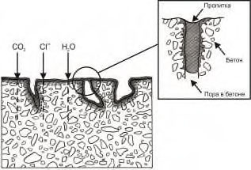
- А.1.2 Метод 1.1 обеспечивает получение водоотталкивающей поверхности бетона с низким уровнем водопоглощения путем нанесения гидрофобизирующего состава.
- А.1.3 Типичными областями применения метода 1.1 являются вертикальные поверхности, например наклонные фасады, не испытывающие длительного воздействия воды под давлением, поверхности, сохранение и поддержание декоративного вида бетона.
- А.1.4 При проектировании ремонта по методу 1.1 учитывают возможное воздействие воды, ограниченное движение трещин, срок службы конструкции и т. д.
- А.1.5 При выполнении работ обеспечивают тщательную подготовку поверхности бетона. Поверхность бетона должна быть достаточно сухой, чтобы обеспечить проникание в бетон гидрофобизирующего состава на глубину до 6 мм и контролировать гидрофобность основания.
- А.1.6 При контроле долговечности системы защиты проводят регулярные осмотры и испытания на смачиваемость обработанной поверхности бетона.
- А.1.7 Дополняющие методы: как правило, метод 1.5, а также методы 3.1-3.3.
- А.1.8 Номенклатуру, значения и методы определения показателей свойств материалов и показателей эксплуатационных качеств образуемых систем методом 1.1 принимают по ГОСТ 32017.
А.2Метод 1.2 - Пропитка
- А.2.1 Для заполнения пор бетона в поверхностной зоне конструкции и исключения переноса жидкостей или газов через эту зону производят пропитку бетона. Кроме заполнения пор в бетоне, на поверхности дополнительно образуется тонкая, но не сплошная пленка из материала, использованного для пропитки. На рисунке А.2 схематично показан процесс нанесения пропиточного состава согласно данному методу.
Рисунок А.2 - Схематичное изображение метода 1.2 до и после применения
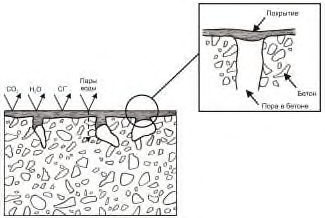
- А.2.2 Пропитка обеспечивает уплотнение (блокирование) пор у поверхности бетона.
- А.2.3 Типичными областями применения пропитки являются полы и горизонтальные поверхности.
- А.2.4 При проектировании защиты учитывают характер раскрытия существующих трещин и возможность образования новых.
- А.2.5 При выполнении работ необходимо:
- выполнять тщательную подготовку поверхности;
- осуществлять просушку поверхности;
- контролировать глубину проникания пропитывающего состава и толщину образуемой пленки на поверхности бетона.
- А.2.6 Данный метод - в зависимости от интенсивности эксплуатационных воздействий обладает долговечностью.
- А.2.7 Дополняющие методы: если требуется, методы 1.5 и 3.1 или 3.2.
- А.2.8 Номенклатуру, значения и методы определения показателей свойств материалов и показателей эксплуатационных качеств образуемых систем методом 1.2 принимают по ГОСТ 32017.
А.3Метод 1.3 - Нанесение покрытия
- А.3.1 Метод нанесения покрытия на бетон используют в основном для защиты и ремонта. В качестве покрытия возможно применение различных красок, полимерных и минеральных составов, отвечающих необходимым требованиям для перекрытия трещин. Метод 1.3 используют для защиты бетона от проникания вредных реагентов и повышения износостойкости основания. Долговечность покрытий зависит от свойств материалов, из которых они изготовлены. Без дополнительного армирования перекрывают трещины с раскрытием до 0,5 мм. На рисунке А.3 схематично показано применение данного метода.
Рисунок А.3 - Схематичное изображение метода 1.3 до и после применения
- А.3.2 В результате применения метода 1.3. образуются покрытия, препятствующие прониканию в бетон вредных реагентов. Эти покрытия повышают физическую, химическую и биологическую стойкость основания.
- А.3.3 Типичными областями применения метода 1.3 являются бетонные конструкции, не испытывающие негативного давления воды (паронепроницаемые покрытия).
- А.3.4 При производстве работ с использованием указанного метода необходимо:
- осуществлять тщательную подготовку поверхности;
- контролировать требуемый уровень влажности поверхности и ее температуру;
- обеспечивать минимальную толщину покрытия;
- учитывать возможные температурные деформации.
- А.3.5 При производстве работ контролируют следующие показатели эксплуатационных качеств: паропроницаемость, адгезию к бетону, толщину покрытия. Адгезия на горизонтальных плоскостях более 2 Н/мм² для составов на полимерной основе и более 1,5 Н/мм² для составов на цементной основе.
- А.3.6 Качество выполнения работ определяют по результатам проведения осмотров и контролю адгезии контактной зоны покрытия с основанием.
- А.3.7 Дополняющие методы: метод 1.5, а также методы 3.1-3.3.
- А.3.8 Номенклатуру, значения и методы определения показателей свойств материалов и показателей эксплуатационных качеств образуемых систем методом 1.3 принимают по ГОСТ 32017.
А.4Метод 1.4 - Бандаж устья трещин
- А.4.1 Метод 1.4 применяют для предотвращения проникания агрессивных веществ в трещины в бетоне. На трещину накладывается жесткий или эластичный поверхностный бандаж, обеспечивающий ее перекрытие. Порядок создания бандажа согласно методу 1.4 схематично показан на рисунке А.4.
Рисунок А.4 - Схематичное изображение метода 1.4 до и после устройства бандажа
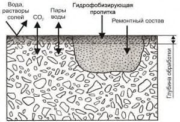
- А.4.2 Адгезионные характеристики материала бандажа, его толщина и ширина определяются выбором материала с учетом ширины трещины, влажности, эксплуатационных требований и пр.
- А.4.3 Типичными областями применения метода 1.4 являются одиночные трещины или трещины с небольшими перемещениями, в том числе подвергающиеся инъекционному заполнению с использованием как поверхностных инъекторов, так и глубинных пакеров.
- А.4.4 При проектировании ремонта с учетом метода 1.4 на период постоянной эксплуатации необходимо указывать ожидаемые параметры движения трещин и т. д.
- А.4.5 Требования к материалам и системам метода 1.4: способность длительно обеспечить перекрытие трещин 0,3 мм без дополнительного армирования; стойкость к механическим воздействиям и способность длительно обеспечить перекрытие трещин 0,5 мм с дополнительным армированием; при использовании пластырей для инъекционных работ обеспечение герметизации и крепление поверхностных инъекторов.
А.4.6 При производстве работ необходимо:
- выполнять тщательную подготовку поверхности с учетом заданной очередности слоев, нанесения материала бандажа;
- контролировать следующие параметры: адгезию к бетону, толщину и ширину бандажа, значения перемещения трещин.
- А.4.7 Для контроля качества и обеспечения долговечности необходимо осуществлять регулярное проведение осмотров и осуществление тестирующих мероприятий.
- А.4.8 Дополняющие методы: метод 3.1 для локальных дефектов в бетоне.
А.5Метод 1.5 - Заполнение трещин
- А.5.1 Метод 1.5 представляет собой альтернативу методам 1.4 и 1.6 и используется для исключения проникания вредных реагентов в трещины в бетоне. Трещины заполняются подходящим инъекционным материалом, который обеспечивает ее герметичность и монолитность конструкции. Использование данного метода схематично показано на рисунке А.5.
Рисунок А.5 - Схематичное изображение метода 1.5 до и после заполнения трещины
- А.5.2 Метод 1.5 реализуется заполнением трещин с помощью инъекции, под действием гравитации и капиллярного впитывания уплотняющего состава определенной вязкости. В отдельных случаях метод 1.5 может быть использован совместно с методом 1.4.
- А.5.3 Типичными областями применения метода 1.5 являются все типы трещин в бетонных и железобетонных конструкциях.
- А.5.4 При проектировании на постоянную эксплуатацию метод 1.5 используют только при ограниченном раскрытии трещин.
- А.5.5 При производстве работ следует:
- максимально полно заполнять трещины;
- контролировать качество работ путем высверливания цилиндрических образцов для проверки степени заполнения трещины или с помощью щупа в отверстиях, пробуренных вкрест простирания трещины. Возможно использование специальных оптических систем, термографии, ультрозвуковой томографии и т. п.
- А.5.6 Для контроля качества обеспечения долговечности следует проводить регулярные осмотры, учитывая режим эксплуатации конструкции.
- А.5.7 Дополняющие методы: используется в сочетании с методами 4.5 и 4.6.
- А.5.8 Номенклатуру, значения и методы определения показателей свойств материалов и показателей эксплуатационных качеств образуемых систем методом 1.5 принимают по ГОСТ 33762.
А.6Метод 1.6 - Преобразование трещин в швы
- А.6.1 Метод 1.6 применяется в дополнение к методам 1.4 и 1.5. Это третий альтернативный вариант уплотнения трещин в целях исключения проникания агрессивных веществ или воды. Трещину расширяют, например при помощи отрезной машинки, и заполняют уплотняющим составом с использованием распространенных методик герметизации швов. Данный метод схематично показан на рисунке А.6.
Рисунок А.6 - Схематичное изображение метода 1.6 после преобразования трещины в шов
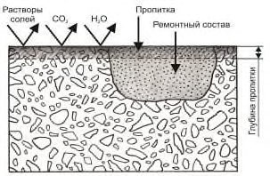
А.6.2 Долговечность получаемой конструкции зависит от упругих свойств герметика, перепада температур, качества работ и пр.
А.6.3 Типичными областями применения метода 1.6 являются одиночные трещины или трещины со значительным раскрытием. Возможно использовать этот метод при ремонте конструкций, подверженных разрушению при взаимодействии щелочи в бетоне с кремнеземом заполнителя.
- А.6.4 При проектировании данного метода следует оценить последствия для конструкции возможное расширение трещины.
- А.6.5 Требования к материалам и системе: нормы, регулирующие выбор и использование материалов для системы уплотнения швов, с учетом расчета их деформаций (расширение смыкание).
- А.6.6 В процессе выполнения работ по заполнению шва герметиком контролируется заданная очередность слоев, толщина и адгезия герметика к обеим сторонам трещины в бетоне, учитывается время обустройства шва, которое связано с раскрытием и деформацией конструкций под воздействием действующих сил и температур. При других технических решениях -использование компрессионных уплотнений, эластичных лент и др., контролируются раскрытие шва и качество зоны контакта материалов с основанием.
- А.6.7 Для обеспечения долговечности шва требуются регулярные осмотры и техническое обслуживание бетонной и железобетонной конструкции, с учетом изменения временных условий эксплуатации.
А.6.8 Дополняющие методы: метод 3.1 для ремонта локальных участков в бетоне.
А.7 Метод 1.7 - Установка наружной облицовки
А.7.1 Метод 1.7 представляет собой защиту от агрессивных веществ путем устройства внешних экранов. Данный метод возможно использовать для всех типов бетонных поверхностей, но наиболее предпочтителен - для вертикальных. Использование данного метода схематично показано на рисунке А.7.
Рисунок А.7 - Схематичное изображение метода 1.7 до и после установки наружной облицовки
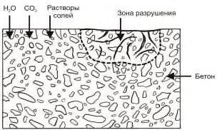
- А.7.2 Типичной областью применения метода 1.7 являются бетонные конструкции, контактирующие с агрессивными веществами.
- А.7.3 При проектировании данного метода следует учесть дополнительные нагрузки и провести поверочные расчеты конструкции.
- А.7.4 При выполнении работ необходимо контролировать герметичность и устойчивость созданной облицовки.
- А.7.5 Для обеспечения долговечности метода 1.7 требуется проведение периодических осмотров на предмет затекания воды с агрессивными веществами за облицовку.
- А.7.6 Дополняющие методы: метод 1.5, а также методы 3.1-3.3.
А.8Метод 1.8 - Устройство мембран
- А.8.1 Назначением метода 1.8 является защита бетона от проникания агрессивных веществ путем устройства мембран. В отличие от облицовки, предусмотренной в методе 1.7, мембраны не являются твердыми и жесткими, а обеспечивают эластичность и пластичность, аналогичную различным битумным и битумно-полимерным материалам. Установка мембран согласно методу 1.8 схематично показана на рисунке А.8.
Бетон до ремонта Бетон после ремонта
Рисунок А.8 - Схематичное изображение метода 1.8 до и после устройства мембраны
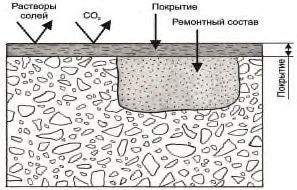
- А.8.2 Метод 1.8 заключается в установке на бетонную поверхность мембраны, исключающей проникание агрессивных веществ.
- А.8.3 Типичной областью применения метода 1.8 являются все типы бетонных поверхностей, не испытывающие негативное давление воды и ее паров.
- А.8.4 При проектировании данного метода требуется учитывать раскрытие трещин, технические решения для стыков, защитных слоев и т. д.
- А.8.5 При производстве работ необходимо:
- осуществлять тщательную подготовку поверхности;
- оценивать уровень влажности поверхности бетона;
- обеспечить минимально необходимую толщину, мембраны и защитного слоя;
- контролировать адгезию мембраны к бетону, толщину мембраны, качество защитного слоя и т. п.
- А.8.6 Долговечность мембраны необходимо обеспечивать с учетом интенсивности воздействия на нее окружающей среды.
- А.8.7 Дополняющие методы: методы 3.1-3.3 для дефектов в бетоне; метод 1.5; для некоторых систем - метод 1.2 - пропитка, перед устройством мембраны.
БПриложение Б. Методы, реализующие принцип 2 - регулирование влагосодержания в бетоне конструкции
Б.1Метод 2.1 - Гидрофобизирующая пропитка
- Б.1.1 Контроль содержания влаги обеспечивают гидрофобизирующей пропиткой. Для использования данного метода важно исключить проникание воды и дать бетону просохнуть путем испарения через гидрофобный слой, как это схематично показано на рисунке Б.1.
- Б.1.2 Метод 2.1 обеспечивает снижение скорости коррозии в бетоне путем высушивания его структуры.
- Б.1.3 Типичными областями применения метода 2.1 являются защита бетона от коррозии в результате реакции щелочей с кремнеземом, защита от воздействия сульфатов или защита от повреждений в результате циклов замораживание/оттаивание на раннем этапе.
- Б.1.4 При проектировании ремонта по методу 2.1 учитывают время на высыхание бетона. Коррозия после гидрофобизирующей обработки продолжится и будет постепенно замедляться.
- Б.1.5 В процессе производства работ следует:
- осуществлять тщательную подготовку поверхности;
- выполнить просушку поверхности бетона;
- обеспечить большую глубину проникания пропитки;
- контролировать глубину проникания пропитки, гидрофобность поверхности основания.
- Б.1.6 При контроле долговечности системы защиты проводят регулярные осмотры и испытания на смачиваемость обработанной поверхности бетона.
- Б.1.7 Дополняющие методы: как правило, метод 1.5, а также методы 3.1-3.3.
- Б.1.8 Номенклатуру, значения и методы определения показателей свойств материалов и показателей эксплуатационных качеств образуемых систем методом 2.1 принимают по ГОСТ 32017.
Рисунок Б.1 - Схематичное изображение метода 2.1 до и после применения гидрофобизирующей пропитки
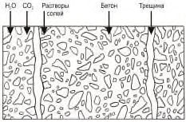
Б.2Метод 2.2 - Пропитка
- Б.2.1 Контроль содержания влаги обеспечивают путем обработки бетона пропиткой, которая заполняет поры в зоне поверхности бетона. В качестве подготовки бетонной поверхности, если потребуется, необходимо выполнить восстановление бетона, как это показано на рисунке Б.2, а если есть трещины, то произвести их ремонт.
Бетон до ремонта Бетон после ремонта
Рисунок Б.2 - Схематичное изображение метода 2.2 до и после применения пропитки
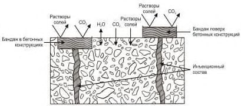
- Б.2.2 Метод 2.2 обеспечивает уплотнение пор в поверхностном слое бетона для уменьшения проникания воды и скорости коррозии бетона.
- Б.2.3 Типичными областями применения метода 2.2 являются полы и другие горизонтальные поверхности.
- Б.2.4 При проектировании ремонта по методу 2.2 учитывают отсутствие защиты при раскрытии существующих трещин или образовании новых. По мере просушки бетона скорость коррозии будет постепенно снижаться.
- Б.2.5 В процессе производства работ следует:
- осуществлять тщательную подготовку поверхности;
- обеспечивать просушку поверхности бетона;
- контролировать глубину проникания пропитки, толщину полученной пленки.
- Б.2.6 Метод обеспечивает высокую степень долговечности в зависимости от интенсивности эксплуатационного воздействия на конструкцию.
- Б.2.7 Дополняющие методы: если потребуется, методы 1.5 и 3.1 или 3.2.
- Б.2.8 Номенклатуру, значения и методы определения показателей свойств материалов и показателей эксплуатационных качеств образуемых систем методом 2.2 принимают по ГОСТ 32017.
Б.3Метод 2.3 - Покрытие
- Б.3.1 Системы покрытий следует использовать для контроля содержания влаги. На рисунке Б.3 схематично показано применение данного метода. При необходимости выполняется подготовка бетонной поверхности, восстановление бетона и заполнение трещин. По сравнению с методами 2.1 и 2.2 преимущество заключается в наличии покрытий, способных обеспечить перекрытие трещин. Для контроля содержания влаги покрытия должны быть непроницаемы для воды снаружи и открыты для испарения водяных паров из бетона.
Бетон до ремонта Бетон после ремонта
Рисунок Б.3 - Схематичное изображение метода 2.3 до и после устройства покрытия
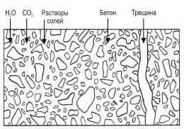
- Б.3.2 Типичными областями применения является коррозия в бетоне в результате реакции щелочей с кремнеземом, воздействия сульфатов или повреждений в результате циклов замораживание/оттаивание на раннем этапе.
- Б.3.3 В процессе производства работ следует:
- осуществлять тщательную подготовку поверхности;
- обеспечивать требуемой уровень влажности поверхности бетона;
- выдерживать минимально возможную толщину покрытия;
- контролировать адгезию к бетону, толщину покрытия, усадку.
- Б.3.4 Для обеспечения долговечности необходимо проведение осмотров конструкции с учетом режима эксплуатации.
- Б.3.5 Дополняющие методы: метод 1.5, а также методы с 3.1 по 3.3.
- Б.3.6 Номенклатуру, значения и методы определения показателей свойств материалов и показателей эксплуатационных качеств образуемых систем методом 2.3 принимают по ГОСТ 32017.
Б.4Метод 2.4 - Установка наружной облицовки
- Б.4.1 Наружная облицовка из панелей, устанавливаемая перед бетонной поверхностью, применяется для снижения содержания воды в бетоне. Состав конструкции наружной облицовки подобен методу 1.7, однако применительно к методу 2.4 дополнительным важным условием является обеспечение возможности испарения воды из бетона через зазор между панелями и конструкцией и швы между панелями, как схематично показано на рисунке Б.4.
Рисунок Б.4 - Схематичное изображение метода 2.4 до и после установки наружной облицовки
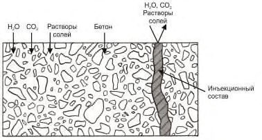
Б.4.2 Типичными областями применения метода 2.4 является защита бетона от коррозии в результате реакции щелочей с кремнеземом, воздействия сульфатов или повреждений в результате циклов замораживание/оттаивание на раннем этапе, метод предпочтителен для вертикальных и наклонных поверхностей.
Б.4.3 При проектировании ремонта по методу 2.4 следует учитывать дополнительные нагрузки и технические решения для крепления панелей.
Б.4.4 В процессе производства работ следует:
- руководствоваться составом конструкторской документации согласно утвержденным спецификациям;
- контролировать качество защиты от внешнего воздействия агрессивных веществ и возможность испарения влаги из конструкции.
Б.4.5 Для обеспечения долговечности нужно проведение осмотров для исключения затекания воды и наличие проветривания зазора между облицовкой и конструкцией.
Б.4.6 В том случае, если со стороны конструкции поступает большое количество воды и влаги, зазор между облицовкой и конструкцией может быть заполнен с помощью инъекции минеральными или органическими составами (цементными растворами, полиуретанами, гельакрилами и пр.).
Б.4.7 Дополняющие методы: метод 1.5, а также методы 3.1-3.3.
ВПриложение В. Методы, реализующие принцип 3 - восстановление бетона конструкций
В.1Метод 3.1 - Нанесение вручную растворной смеси
В.1.1 Восстановление бетона при помощи нанесения раствора вручную следует применять для ремонта относительно небольших участков, используя жесткие ремонтные смеси на цементной или полимерной основе. Для участков большей площади более обоснованным с технической и экономической точек зрения способом ремонта является повторная отливка согласно методу 3.2 или использование торкретраствора или набрызгбетона согласно методу 3.3. Целью данного метода является замена бетона плохого качества новым строительным раствором или бетоном, без усиления конструкции.
- В.1.2 Метод 3.1 необходимо применять для замены дефектного бетона ремонтным составом или бетоном вручную (рисунок В.1.).
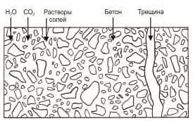
1 - утрамбованный слоями ремонтный раствор; 2 - деревянная трамбовка; 3 - опалубка; 4 - анкерное крепление; 5 - направление формирования конструкции
Рисунок В.1 - Укладка ремонтного состава в опалубку вручную с помощью трамбовки
- В.1.3 Типичными областями применения метода 3.1 являются все типы бетонных поверхностей, в том числе имеющих сложную форму.
- В.1.4 При проектировании ремонта по методу 3.1 следует учитывать требования к внешнему виду восстанавливаемой конструкции.
- В.1.5 В процессе производства работ следует:
- выполнять подготовку поверхности бетона и арматуры;
- контролировать консистенцию ремонтного состава;
- обеспечивать полное удаление дефектного бетона;
- осуществлять визуальный контроль восстанавливаемой поверхности.
- В.1.6 Дополняющие методы: метод 3.1 часто необходимо применять перед использованием других методов.
- В.1.7 Номенклатуру, значения и методы определения показателей свойств материалов и показателей эксплуатационных качеств образуемых систем методом 3.1 принимают по ГОСТ Р 56378.
- В.2 Метод 3.2 - укладка (заливка) бетонной смеси
- В.2.1 Укладку (заливку) бетонной смеси в зонах дефектных участков при помощи бетона или ремонтного состава следует использовать как альтернативу нанесению бетона или раствора вручную или набрызгом (торкретированием). Для метода 3.2 предъявляются требования как для новой бетонной конструкции. При выполнении работ необходимо учитывать совместимость существующего бетона и возможность передачи усилий через контактную зону между «старым» и «новым» бетоном. Укладку «нового» бетона можно осуществлять по свежеуложенному праймерному составу (рисунок В.2).
Рисунок В.2 - Укладка (заливка) бетонной смеси дефектных участков
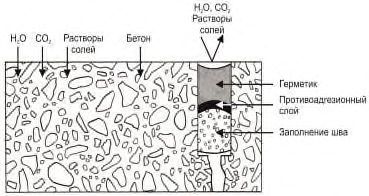
- В.2.2 Укладка (заливка) бетонной смеси по методу 3.2 применяется для замены дефектного бетона.
- В.2.3 Типичными областями применения являются все типы бетонных поверхностей, за исключением нижних поверхностей плит перекрытия, когда невозможна подача бетона или растворной смеси через плиту сверху с подпрессовкой.
- В.2.4 В процессе производства работ следует:
- осуществлять подготовку поверхности бетона и арматуры;
- выполнять полное удаление дефектного бетона;
- осуществлять визуальный контроль укладки и контроль адгезии.
- В.2.5 Дополняющие методы: метод 1.8 (горизонтальная поверхность) или метод 1.3; метод 8.3 (вертикальная поверхность) или другие, например методы 1.1, 5.1, 6.1 и 8.1.
- В.2.6 Номенклатуру, значения и методы определения показателей свойств материалов и показателей эксплуатационных качеств образуемых систем методом 3.2 принимают по ГОСТ Р 56378.
- В.3 Метод 3.3 - Набрызг (торкретирование) бетонной или растворной смеси
- В.3.1 Нанесение бетона или раствора набрызгом (торкретированием) является эффективным методом для вертикальных поверхностей или нижних поверхностей плит перекрытий. Перед нанесением необходимо соблюдать условие, чтобы бетонное основание имело поверхностную прочность на растяжение - минимальное значение 1,0 Н/мм² и минимальное среднее значение 1,5 Н/мм² на глубину 0,6 см от вскрытой поверхности (рисунок В.3). Возможно применение как мокрого, так и сухого способа нанесения раствора или бетона. Нанесение ремонтных материалов можно осуществлять по праймерному составу, нанесенному на поверхность ремонтируемого бетона.
Бетон до ремонта Бетон после ремонта
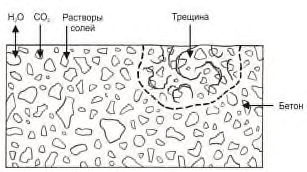
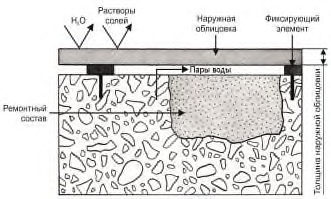
1 - старый бетон; 2 - усадочные трещины; 3 - слой торкрета/набрызгбетона; 4 - толщина слоев торкрета/набрызгбетона от 2 до 7 см; 5 - арматурный каркас (по необходимости)
Рисунок В.3 - Нанесение ремонтного состава торкретированием на нижние и вертикальные поверхности бетонной конструкции
- В.3.2 Метод 3.3 применяют для замены дефектного бетона строительным раствором или бетоном на всей площади или на локальных участках нанесением набрызгом (торкретированием).
- В.3.3 Типичными областями применения метода 3.3 являются вертикальные поверхности и нижние поверхности плит перекрытия или настилов.
- В.3.4 При проектировании ремонта по методу 3.3 необходимо обеспечивать передачу усилий от «старого» бетона к «новому». Возможно использование дополнительного армирования слоев с анкеровкой к существующей конструкции.
- В.3.5 В процессе производства работ следует:
- обеспечивать удаление дефектного бетона;
- выполнять подготовку поверхности и арматурного каркаса;
- осуществлять визуальный и инструментальный контроль качественных показателей материалов и технологии производства работ.
- В.3.6 Дополняющие методы: методы 1.3, 8.3 или другие, например 1.1, 5.1, 6.1, 8.1.
- В.4 Метод 3.4 - Замена элементов
- В.4.1 При ремонте бетонных и железобетонных конструкций для решения определенных задач требуется замена элементов, как правило, на эквивалентные по своим характеристикам, которые могут быть из различных строительных материалов, что определяется конкретным проектом.
ГПриложение Г. Методы, реализующие принцип 4 - усиление конструкций
- Г.1 Метод 4.1 - Добавление или замена замоноличенных или наружных арматурных стержней.
- Г.1.1 Метод 4.1 распространяется на конструкции с недостаточной несущей способностью или нарушенными эксплуатационными свойствами, усиление которых достигается за счет увеличения основного армирования конструкций, учитываемого в расчетах.
- Г.1.2 При усилении по методу 4.1 арматурные стержни могут быть добавлены в отверстия, снаружи существующей конструкции (внешнее армирование) или в составе нового внешнего слоя бетона, как дополнение к методу 4.4.
- Г.1.3 Внешнее армирование может осуществляться установкой дополнительной стальной арматуры или наклейкой композитных материалов.
- Г.1.4 При усилении конструкций процесс коррозии существующей арматуры в бетоне должен быть приостановлен. В зависимости от условий эксплуатации может потребоваться устройство антикоррозионных и противопожарных покрытий и панелей или принятия иных мер, которые затрудняют доступ к конструкции и увеличивают ее габариты.
- Г.1.5 При необходимости усиления только растянутой зоны элемента рекомендуется усиление путем приварки дополнительной арматуры (рисунок Г.1).
- Г.1.6 Обнажение существующей арматуры выполняется локально, с шагом 200-1000 мм.
- Г.1.7 Усиление путем приварки не допускается для конструкций со значительным коррозионным повреждением, а также без частичного разгружения при высоких напряжениях в арматуре.
- Г.1.8 Сварка арматуры усиления должна соответствовать требованиям ГОСТ 14098 и настоящего свода правил.
1 - усиливаемая конструкция; 2 - существующая арматура; 3 - дополнительная арматура; 4 - планки или коротыши из арматурной стали
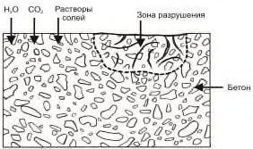
Рисунок Г.1 - Схема усиления приваркой дополнительной арматуры
- Г.1.9 Усиление изгибаемых элементов на действие поперечных сил рекомендуется выполнять путем установки дополнительной поперечной арматуры (рисунок Г.2).
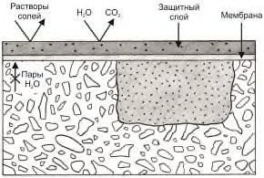
1 - усиливаемая балка; 2 - накладные хомуты из арматурной стали; 3 - подкладка; 4 - гайка; 5 -нижние прокладки из уголков
Рисунок Г.2 - Схема усиления балок на восприятие поперечных сил вертикальными хомутами
Г.1.10 Усиление плитных конструкций, имеющих надежную анкеровку по концам, рекомендуется выполнять поперечным армированием, устанавливаемым в сквозные отверстия. Также, при наличии опытного обоснования допускается применение вклеенной поперечной арматуры, устанавливаемой под углом 45° к плоскости плиты (рисунок Г.3).
1 - усиливаемая плита; 2 - резьбовые шпильки; 3 - шайба; 4 - гайка
Рисунок Г.3 - Схема усиления плоских плит на восприятие поперечных сил дополнительной поперечной арматурой
- Г.1.11 В случае недостаточной несущей способности при усилении поперечным армированием следует применять усиление рубашками, подведением новых опор и др. В этих случаях особое внимание следует уделять обеспечению совместной работы нового и старого бетона, а также достаточной прочности и жесткости новых опор.
- Г.1.12 Для эффективного включения дополнительной арматуры в работу рекомендуется предусматривать ее предварительно напряженной по методу 4.7.
- Г.1.13 При необходимости установки новых арматурных выпусков в существующие конструкции, вклейку арматуры усиления следует производить с использованием составов на эпоксидной основе, имеющих Техническое свидетельство, выданное в установленном порядке.
- Г.1.14 Для обеспечения надлежащей анкеровки (нахлестки) выпусков особое внимание при их проектировании следует уделять конструктивным требованиям по размещению: минимальному шагу арматуры, расстоянию до края и др.
- Г.1.15 Работы по вклейке арматуры должны выполняться в соответствии с инструкцией производителя, персоналом, имеющим опыт в выполнении данных работ.
- Г.1.16 Согласно методу 4.1 арматурные стержни следует добавлять в отверстия или углубления в бетоне или снаружи существующей конструкции в составе нового внешнего слоя (см. рисунок Г.4).
- Г.1.17 Дополняющий метод: методы 4.2, 4.7.
- Г.2 Метод 4.2 - Добавление арматуры, закрепляемой в заранее сформированных или пробуренных каналах.
- Г.2.1 Метод добавления арматуры, закрепляемой в заранее сформированных или пробуренных каналах осуществляется с целью усиления конструкций путем добавления арматуры, заанкерованной в подготовленные каналы или просверленные отверстия для соединения новых армированных слоев бетона или элементов с существующей конструкцией (рисунок Г.5.)
- Г.2.2 Основными этапами выполнения работ являются подготовка отверстия бурением, выдалбливанием или гидроструйной обработкой, установка арматурного стержня и замоноличивание специальным составом на минеральной или полимерной основе.
- Г.2.3 Основными областями применения метода 4.2 является устройство соединений между «новыми» и «старыми» бетонными элементами.
- Г.2.4 Применение указанного метода требует проведения расчета прочности конструкции.
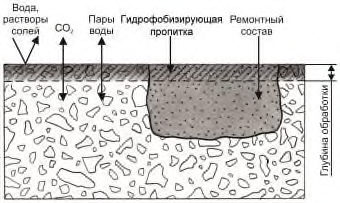
Рисунок Г.4 - Схематичное изображение метода 4.1 после добавления (замены) арматурных стержней
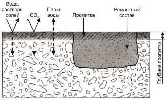
Рисунок Г.5 - Схематичное изображение метода 4.2 после применения
- Г.2.5 При выполнении работ по анкеровке арматурных стержней требуется тщательная подготовка отверстия и максимальная степень заполнения его раствором на минеральной или полимерной основе.
- Г.2.6 Данный метод применяется совместно с методом 4.1 или 4.4.
- Г.2.7 Контроль качества выполнения работ должен осуществляться путем испытания на выдергивающее усилия арматуры по ГОСТ 56731.
- Г.3 Метод 4.3 - Внешнее армирование приклеиванием полос, холстов, сеток
- Г.3.1 Внешнее армирование приклеиванием полос, холстов, сеток заключается в установке соответствующих элементов системы внешнего армирования на бетонные поверхности с целью сохранения или увеличения несущей способности (рисунок Г.6).
Бетон до ремонта
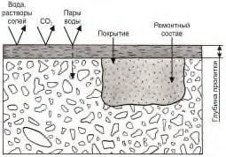
Бетон после ремонта
Рисунок Г.6 - Схематичное изображение метода 4.3 до и после применения
- Г.3.2 Приклеивание полос и холстов следует производить при помощи материалов на основе эпоксидных смол, руководствуясь ГОСТ 32943. Присоединение активных сеток следует осуществлять при использовании полимерцементной матрицы и растворов полимеров. При выполнении работ необходимо руководствоваться СП 164.1325800.
- Г.3.3 Область применения метода 4.3 распространяется на конструкции с недостаточной несущей способностью, например, по причине коррозии арматурного каркаса, а также в случае увеличения нагрузок. При усилении конструкций процесс коррозии арматуры в бетоне должен быть приостановлен. В конструкциях, испытывающих воздействие паров воды, необходимо оставлять не менее 50 % свободной площади поверхности, которая обеспечит перемещение влаги.
- Г.3.4 При реализации данного метода требуется расчет прочности конструкции.
- Г.3.5 Для защиты приклеенных полимерных полос (ламинатов) и холстов необходимо выполнение противопожарных мероприятий.
- Г.3.6 Для реализации данного метода должен производится ремонт участков с некачественным бетоном с заполнением трещин. Поверхность бетона должна обладать достаточной прочностью на растяжение до глубины не более 6 мм от поверхности, защитным слоем бетона и ровностью в соответствии с допусками для конкретной системы. Особое внимание следует уделить защите от температурного воздействия, исходя из свойств клеевого состава. В зависимости от условий эксплуатации может потребоваться устройство противопожарных покрытий и панелей или принятия иных мер, которые затрудняют доступ к конструкции и увеличивают ее габариты.
- Г.3.7 Метод 4.3 дополняется методами 3.1 и 1.5 или 4.5, или 4.6.
- Г.3.8 Номенклатуру, значения и методы определения показателей свойств материалов и показателей эксплуатационных качеств образуемых систем методом 4.3 принимают по ГОСТ 32943.
Г.4Метод 4.4 - Добавление бетона или раствора
- Г.4.1 Метод 4.4 заключается в добавлении строительного раствора или бетона в существующую бетонную конструкцию. Сущность данного метода состоит в нанесении нового бетона поверх старого, совместимого с ним по своим свойствам. Увеличение сечения бетонной или железобетонной конструкции или устройство дополнительных элементов, работающих совместно с усиляемыми конструкциями, повышают их несущую способность при сохранении основной расчетной схемы. Укладку бетона или раствора можно осуществлять по праймерному слою. Данный метод схематично показан на рисунке Г.7.
- Г.4.2 Типичные области применения метода 4.4 распространяются на все типы бетонных и железобетонных конструкций.
- Г.4.3 Метод 4.4 может быть реализован путем:
Рисунок Г.7 - Схематичное изображение метода 4.4 до и после применения
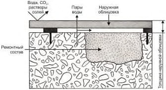
- устройства набетонки - увеличения сечения конструкции с одной стороны путем выполнения дополнительного, как правило, армированного бетонного слоя сечения, работающего совместно с усиляемой конструкцией;
- устройства железобетонных обойм - то же с увеличением сечения по всему периметру конструкции с устройством замкнутого контура;
- устройства железобетонных рубашек - то же с увеличением сечения с двух или более сторон без образования замкнутого контура;
- Г.4.4 При реализации метода 4.4 с выполнением бетонных или железобетонных элементов усиления требуется:
- контроль соответствия свойств нового бетона с основанием;
- тщательная подготовка поверхности;
- контроль адгезии между слоями бетона.
- Г.4.5 Дополняющие методы: метод 1.5, 4.4, 4.5 или 4.6.
- Г.4.6 Номенклатуру, значения и методы определения показателей свойств материалов и показателей эксплуатационных качеств, образуемых систем методом 4.4, принимают по ГОСТ 32943 и ГОСТ Р 56378.
- Г.4.7 Усиление набетонкой рекомендуется выполнять в случае ограничения доступа с нижней стороны элемента, а также при отсутствии необходимости усиления вертикальных конструкций и фундаментов (рисунок Г.8).
- Г.4.8 Для обеспечения совместной работы усиливаемой конструкции с набетонкой необходимо устройство поперечных связей в виде поперечной арматуры либо шпонок. При соответствующей расчетном обосновании и обеспечении адгезии допускается выполнять связь путем насечки и нанесения подготовительного состава.
1 - усиливаемая конструкция; 2 - набетонка; 3 - поперечные связи
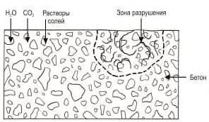
Рисунок Г.8 - Схема усиления набетонкой
- Г.4.9 Не рекомендуется применение усиления набетонкой переармированных конструкций при ξ > ξ R и уровне нагрузки более 80 % от расчетного значения.
- Г.4.10 Толщину набетонки следует принимать не менее 60 мм исходя из обеспечения величины защитного слоя бетона согласно СП 63.13330 для армированных набетонок.
- Г.4.11 Для усиления сжатых элементов (колонн, стен и др.) применяют усиление в виде рубашек и обойм.
- Г.4.12 Обоймы из железобетона выполняют в пределах одного или нескольких этажей, с доведением в верхнем сечении до уровня вышележащего перекрытия, а в нижнем - до верхнего обреза фундамента. При усилении обоймой на локальном участке конструкции допускается высоту обоймы выполнять с заведением за участок усиления не менее чем на 2 b , где b -наибольший размер сечения элемента.
- Г.4.13 Для внецентренно сжатых стержневых элементов с квадратным либо круглым поперечным сечением и малым эксцентриситетом продольной силы рекомендуется применять железобетонные обоймы со спиральным поперечным армированием.
- Г.4.14 При конструировании обойм со спиральным армированием следует выполнять следующие требования:
- диаметр поперечной арматуры следует принимать не менее 6 мм;
- спирали в плане должны быть круглыми;
- расстояние между витками спирали в осях должны быть не менее 40 мм и не менее 1/5 диаметра сечения ядра обоймы, охваченного спиралью и не более 100 мм;
- у опор обоймы и в местах концентрации усилий шаг спирали не должен превышать 50 мм;
- спирали должны охватывать всю продольную рабочую арматуру.
- Г.4.15 Армирование обойм принимается согласно расчету, при этом диаметр продольной рабочей арматуры принимают не менее 16 мм, поперечной вязаной арматуры не менее 6 мм, сварной - не менее 8 мм.
- Г.4.16 Усиление рубашками следует выполнять только в случае, если по каким-либо причинам невозможно выполнение замкнутой обоймы.
- Г.4.17 При учете совместной работы рубашки и усиляемой конструкции поперечная арматура рубашки должна быть заанкерена путем приварки к существующей арматуре элемента. В противном случае усиление следует проектировать на восприятие всей нагрузки.
- Г.4.18 Армирование рубашек принимается согласно расчету, при этом диаметр продольной рабочей арматуры принимают не менее 8 мм, поперечной вязаной арматуры не менее 6 мм, сварной - не менее 8 мм.
- Г.5 Метод 4.5 - Инъектирование в трещины, пустоты или полости
- Г.5.1 Стандартным методом восстановления бетона в зоне трещин и пустот является его инъектирование заполняющими материалами, способными обеспечить передачу нагрузок, например полимерными и цементными составами, которые могут поступать в конструкцию самотеком (заливкой) или под определенным давлением с использованием как поверхностных, так и пакеров, устанавливаемых в пробуренные отверстия. Метод 4.5 схематично показан на рисунке Г.9.
Рисунок Г.9 - Схематичное изображение метода 3.4 до и после применения
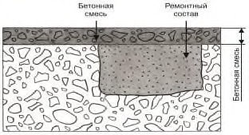
- Г.5.2 Метод 4.5 реализуется путем максимального заполнения участков с дефектом путем инъектирования затвердевающего материала для обеспечения несущей способности на уровне качественного бетона.
- Г.5.3 Типичными областями применения метода 4.5 являются трещины или пустоты в конструкциях, к которым имеются высокие требования по несущей способности, герметичности и долговечности.
- Г.5.4 При проектировании метода 4.5 следует предусматривать контроль уровня влаги в трещине, раскрытие и движение трещин, консистенцию, давление инъекционного раствора, его сроки схватывания, адгезию между составом и основанием.
- Г.5.5 В процессе выполнения работы контролируется степень заполнения бетонной конструкции инъекционными составами.
- Г.5.6 Дополняющие методы: метод 3.1 или покрытие для улучшения внешнего вида.
- Г.5.7 Номенклатуру, значения и методы определения показателей свойств материалов и показателей эксплуатационных качеств образуемых систем методом 4.5 принимают по ГОСТ 33762.
- Г.6 Метод 4.6 - Заполнение трещин, пустот или полостей
- Г.6.1 Метод 4.6 предусматривает усиление конструкций путем заполнения участка с дефектом без использования давления посредством заливки, поэтому необходимо обеспечить максимально возможную степень заполнения участков с дефектом (рисунок Г.10).
- Г.6.2 Метод 4.6 реализуется при максимально возможном заполнении участков с дефектом путем заливки затвердевающего материала для обеспечения несущей способности на уровне качественного бетона.
- Г.6.3 Типичной областью применения метода 4.6 является бетонные и железобетонные конструкции с не насыщенными водой трещинами с раскрытием более 0,8 мм.
- Г.6.4 При проектировании метода 4.6 необходимо пробное выполнение работ для проверки возможной степени заполнения; альтернатива - метод 4.5 (нагнетание вместо заливки) и т. д.
Рисунок Г.10 - Схематичное изображение метода 3.5 до и после применения
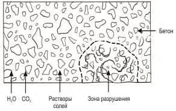
- Г.6.5 При выполнении работ следует контролировать степень заполнения трещин конструкции, консистенцию раствора.
- Г.6.6 Дополняющие методы: метод 3.1 или покрытие для улучшения внешнего вида.
- Г.6.7 Номенклатуру, значения и методы определения показателей свойств материалов и показателей эксплуатационных качеств образуемых систем методом 4.6 принимают по ГОСТ 33762.
- Г.7 Метод 4.7 - Установка предварительно напряженной арматуры
- Г.7.1 Метод 4.7 распространяется на конструкции с недостаточной несущей способностью или нарушенными эксплуатационными свойствами, усиление которых достигается за счет эффективно включаемого в работу дополнительного армирования конструкций или за счет преднапряжения и обжатия усиляемых конструкций.
- Г.7.2 Метод 4.7 является дополняющим к методу 4.1.
- Г.7.3 Усиление по методу 4.7 рекомендуется выполнять предварительно напряженными затяжками и шпренгелями для конструкций, для которых по условиям эксплуатации невозможно либо затруднено частичное разгружение.
- Г.7.4 Предварительное натяжение выполняется механическим, электротермическим или комбинированным способом.
- Г.7.5 В качестве предварительно напряженной арматуры усиления рекомендуется применять арматуру класса не ниже А500С, диаметром 16-40 мм. Для сильно нагруженных и массивных конструкций следует применять затяжки из стального проката.
- Г.8 Метод 4.8 - Усиление жесткими или упругими опорами
- Г.8.1 Область применения метода 4.8 распространяется на конструкции с недостаточной несущей способностью, усиление которых достигается за счет изменения расчетной схемы конструкции введением дополнительных опор и уменьшением пролетов.
- Г.8.2 Усиление упругими опорами выполняется путем подведения под усиляемую конструкцию балочных и ферменных элементов из стального проката, с последующим включением их в работу путем подклинки (рисунки Г.11, Г.12).
1 - усиливаемая балка; 2 - усиливающая балка; 3 - металлическая обойма колонны; 4 - кронштейны; 5 - клиновидные прокладки
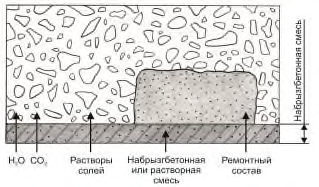
Рисунок Г.11 - Схема усиления дополнительной упругой опорой (металлической балкой) на кронштейнах
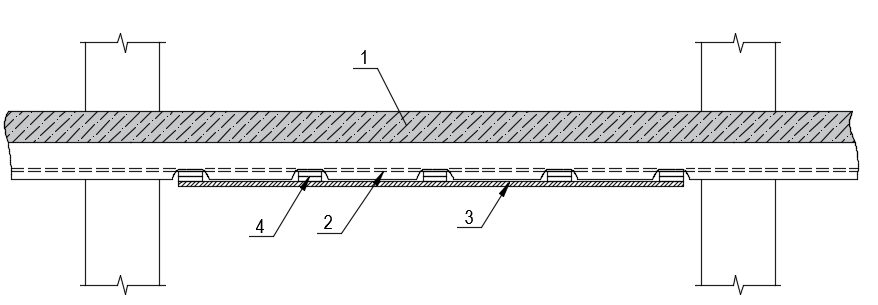
1 - усиливаемый ригель; 2 - предварительной напряженный тяж; 3 - металлическая обойма; 4 -натяжная гайка; 5 - сварные швы; 6 - отверстия, заделываемые податливым материалом; 7 - натяжная муфта
Рисунок Г.12 - Схема усиления дополнительной упругой опорой (предварительно напряженными тяжами)
Г.8.3 Жесткие опоры выполняют из железобетонных или стальных стоек, устанавливаемых на существующие либо новые фундаменты. Для снижения податливости опор следует отдавать предпочтение опиранию на существующие фундаменты, даже в случае необходимости их усиления.
Г.8.4 Для обеспечения включения в работу жестких опор необходимо обеспечение частичного разгружения усиляемых конструкций путем снятия временной нагрузки либо временного подъема (рисунки Г.13-Г.15).
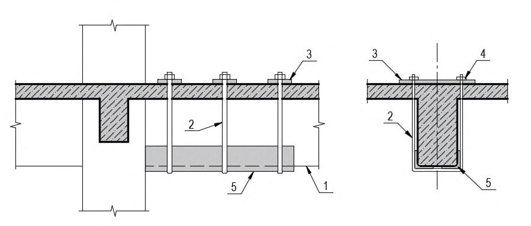
1 - усиливаемая конструкция; 2 - отдельный фундамент под дополнительную опору; 3 -металлическая стойка; 4 - элементы крепления
Рисунок Г.13 - Схема усиления дополнительной жесткой опорой - подведением стойки
1 - усиливаемая конструкция; 2 - металлическая портальная рама; 3 - охватывающий металлический хомут; 4 - прокладки
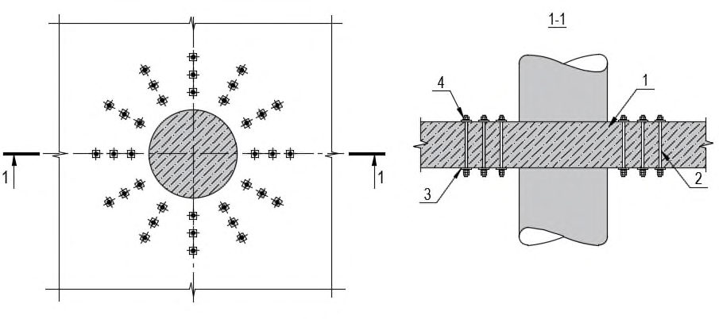
Рисунок Г.14 - Схема усиления дополнительной жесткой опорой - подведением рамы
1 - усиливаемый ригель; 2 - металлические подкосы; 3 - затяжка на уровне пола; 4 - клиновидные прокладки; 5 - опорный уголок; 6 - фиксирующие болты
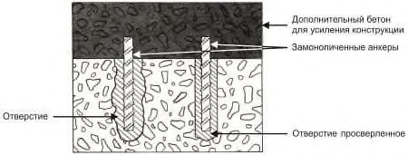
Рисунок Г.15 - Схема усиления дополнительной жесткой опорой - подведением металлических подкосов
Г.9Метод 4.9 - Устройство обойм из стального проката
Г.9.1 Метод 4.9 заключается в устройстве дополнительных элементов, работающих совместно с усиляемыми конструкциями и повышающих их несущую способность при сохранении основной расчетной схемы.
Г.9.2 Метод 4.9 может быть реализован путем устройства обойм из стального проката устройство замкнутой металлической конструкции вокруг усиляемой и повышающей ее несущую способность за счет включения в совместную работу.
Г.9.3 Обоймы из стального проката рекомендуются для сжатых элементов с малыми эксцентриситетами продольной силы. С целью снижения расчетной длины ветвей сжатых элементов обойм необходимо обеспечить их плотное прилегание к бетону усиляемой колонны путем устранения неровностей, зачеканки зазоров между элементами усиления и бетоном колонны, а также натяжения поперечных планок.
Г.9.4 При необходимости усиления сжатых элементов с большими эксцентриситетами, а также при двузначной эпюре моментов рекомендуется применять обоймы с вертикальными элементами из предварительно напряженных распорок. В зависимости от действующих усилий распорки могут быть как односторонними, так и двухсторонними (рисунок Г.16). Величину напряжения распорок рекомендуется принимать 40-70 МПа. а - в период монтажа; б - в напряженном состоянии; 1 - усиливаемая колонна; 2 - уголки распорок; 3 - соединительные планки; 4 - упорные уголки; 5 - планки-упоры; 6 - крепежный монтажный болт; 7 - натяжной монтажный болт; 8 - планки для натяжения болтов в месте перегиба
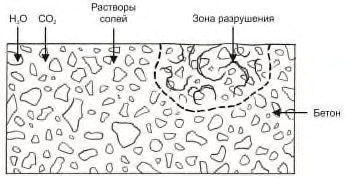
Рисунок Г.16 - Схема усиления колонны предварительно напряженными двухсторонними металлическими распорками
Г.10Метод 4.10 - Усиление заменяющими конструкциями
Г.10.1 Область применения метода 3.4 распространяется на конструкции с недостаточной несущей способностью. При устройстве заменяющих конструкций выполняются новые конструктивные элементы, полностью воспринимающие проектные усилия.
Г.10.2 Усиление несущих конструкций перекрытий, покрытий, балок на действие изгибающих моментов с применением заменяющего метода может выполняться как отдельными конструктивными элементами (балками, плитами, фермами), так и взаимосвязанными системами из железобетонных либо стальных элементов.
- Г.10.3 Метод 4.10 рекомендуется применять для усиления локальных участков или при значительном дефиците несущей способности, а также для конструкций, находящихся в аварийном техническом состоянии.
- Г.10.4 При замене конструкций на существующие, необходимо организовывать зазор для обеспечения свободного прогиба заменяющей конструкции.
- Г.10.5 При выполнении заменяющей конструкции, расположенной под конструкцией усиления, рекомендуется устраивать сквозные отверстия в существующей конструкции для пропуска стоек усиления.
- Г.10.6 Несущая способность сохраняемых и разгружаемых конструкций и элементов должна быть обеспечена с учетом изменения расчетной схемы и действующих усилий (рисунки Г.17, Г.18).
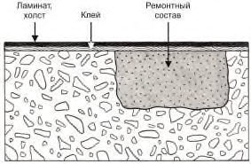
1 - существующее перекрытие; 2 - конструкция усиления; 3 - зазор
Рисунок Г.17 - Схема устройства разгружающей железобетонной конструкции сверху
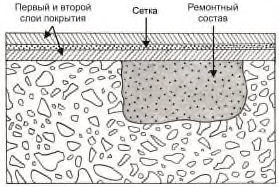
1 - существующее перекрытия; 2 - оборудование (нагрузка); 3 - опорные стойки; 4 - балки разгружающей рамы; 5 - отверстия в плите
Рисунок Г.18 - Схема устройства разгружающей конструкции снизу
ДПриложение Д. Методы, реализующие принцип 5 - повышение физической стойкости бетона конструкции
Д.1Метод 5.1 - Покрытие
Д.1.1 Метод 5.1 предусматривает нанесение покрытия на бетонную поверхность для повышения ее стойкости к физическим воздействиям, например к абразивному износу или ударным нагрузкам. Данный метод схематично показан на рисунке Д.1. В качестве подготовки поверхности необходимо произвести замену бетона на участках с неудовлетворительным качеством, а также уплотнить трещины.
Рисунок Д.1 - Схематичное изображение метода 5.1 до и после применения
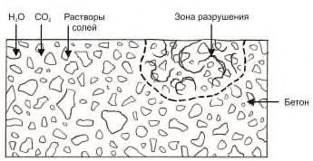
- Д.1.2 Метод 5.1 применяется для повышения стойкости к физическим воздействиям бетонных и железобетонных конструкций при отсутствии негативного давления воды и ее паров.
- Д.1.3 Типичной областью применения метода 5.1 являются полы, поверхности, подвергающиеся абразивному износу или ударным нагрузкам.
- Д.1.4 При проектировании ремонта по методу 5.1 следует учитывать раскрытие старых или появление новых трещин, а также величины физических воздействий.
- Д.1.5 В процессе производства работ следует:
- осуществлять тщательную подготовку поверхности;
- следить за температурой, влажностью и паропроницаемостью основания;
- контролировать толщину слоя покрытия;
- выполнять контроль адгезии слоя покрытия к основанию.
- Д.1.6 Для обеспечения долговечности рекомендуется проведение осмотров в зависимости от режима эксплуатации.
- Д.1.7 Дополняющие методы: методы 3.1-3.3, 1.5, 4.5 или 4.6.
- Д.1.8 Номенклатуру, значения и методы определения показателей свойств материалов и показателей эксплуатационных качеств образуемых систем методом 5.1 принимают по ГОСТ 32017.
Д.2Метод 5.2 - Пропитка
- Д.2.1 В качестве альтернативы нанесению покрытий для повышения стойкости бетона к физико-механическим воздействиям используют пропитку бетона. Метод 5.2 схематично показан на рисунке Д.2.
Бетон до ремонта Бетон после ремонта
Рисунок Д.2 - Схематичное изображение метода 5.2 до и после применения
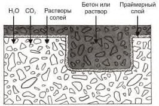
- Д.2.2 Типичными областями применения метода 5.2 являются полы и другие конструкции, подвергающиеся абразивному износу или ударным нагрузкам.
- Д.2.3 При проектировании ремонта по методу 5.2 следует учитывать раскрытие старых или появление новых трещин, виды и значения величин физического воздействия.
- Д.2.4 При выполнении работ необходимо:
- осуществлять тщательную подготовку поверхности;
- контролировать адгезионную прочность поверхности, температуру, влажность и паропроницаемость бетона.
- Д.2.5 Для обеспечения долговечности необходимо проведение осмотров в зависимости от режима использования.
- Д.2.6 Дополняющие методы: методы 3.1-3.3, 1.5, 4.5 или 4.6.
- Д.2.7 Номенклатуру, значения и методы определения показателей свойств материалов и показателей эксплуатационных качеств образуемых систем методом 5.2 принимают по ГОСТ 32017.
- Д.3 Метод 5.3 - Добавление раствора или бетона
- Д.3.1 Повышение стойкости конструкции к физическим воздействиям обеспечивается путем добавления в ремонтируемую конструкцию строительного раствора или бетона. Метод 5.3 схематично показан на рисунке Д.3.
Рисунок Д.3 - Схематичное изображение метода 5.3 до и после применения
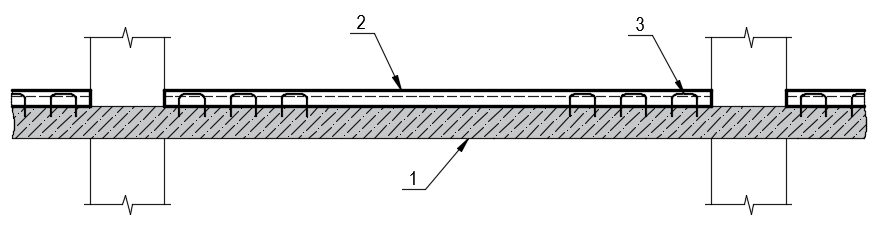
Д.3.2 Добавление слоя строительного раствора или бетона по методу 5.3 обеспечивает повышение стойкости существующей бетонной поверхности к физическим воздействиям.
Д.3.3 Типичными областями применения метода 5.3 являются полы и поверхности, подвергающиеся абразивному износу или ударным нагрузкам.
Д.3.4 При проектировании ремонта по методу 5.3 следует учитывать движение трещин или новые трещины, величины физического воздействия, возможность изменения отметок уровней поверхности.
Д.3.5 В процессе выполнения работ необходимо:
- осуществлять тщательную подготовку поверхности;
- контролировать адгезию, толщину слоя, температуру и влажность бетона.
Д.3.6 Для обеспечения долговечности следует проводить осмотры в зависимости от режима эксплуатации.
Д.3.7 Дополняющие методы: методы 3.1-3.3, 1.5, 4.5, 4.6 или 5.2.
ЕПриложение Е. Методы, реализующие принцип 6 - повышение химической стойкости бетона конструкции
Е.1Метод 6.1 - Покрытие
- Е.1.1 Метод 6.1 представляет собой нанесение покрытия на поверхность бетона для повышения стойкости к воздействию химических веществ и схематично показан на рисунке Е.1.
- Е.1.2 Типичными областями применения метода 6.1 являются поверхности, подверженные сильному химическому воздействию, чаще всего при отсутствии негативного давления воды и ее паров.
- Е.1.3 При проектировании ремонта по методу 6.1 учитывают раскрытие трещин или появление новых трещин.
- Е.1.4 В процессе производства работ следует:
- осуществлять тщательную подготовку поверхности;
- контролировать адгезию, толщину слоя покрытия, влажность бетона, его температуру и т. д.
- Е.1.5 Для обеспечения долговечности необходимо проведение осмотров в зависимости от режима эксплуатации.
- Е.1.6 Дополняющие методы: методы 3.1-3.3, 1.5.
- Е.1.7 Номенклатуру, значения и методы определения показателей свойств материалов и показателей эксплуатационных качеств образуемых систем методом 6.1 принимают по ГОСТ 32017.
Рисунок Е.1 - Схематичное изображение метода 6.1 до и после применения
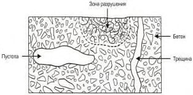
Е.2Метод 6.2 - Пропитка
- Е.2.1 Повышение химической стойкости конструкции осуществляется путем пропитки бетона по методу 6.2, как показано на рисунке Е.2.
Рисунок Е.2 - Схематичное изображение метода 6.2 до и после применения
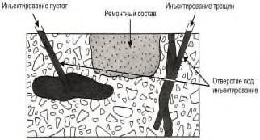
- Е.2.2 Типичными областями применения метода 6.2 являются поверхности, подверженные сильному химическому воздействию, предпочтительно, в зонах уплотненных трещин и отсутствия негативного воздействия воды и ее паров.
- Е.2.3 При проектировании ремонта по методу 6.2 следует учитывать раскрытие трещин или появление новых трещин.
- Е.2.4 В процессе производства работ следует:
- осуществлять тщательную подготовку поверхности;
- контролировать адгезионную прочность бетона.
- Е.2.5 Для обеспечения долговечности необходимо проведение осмотров в зависимости от режима эксплуатации конструкции.
- Е.2.6 Дополняющие методы: методы 3.1-3.3, 1.5.
- Е.2.7 Номенклатуру, значения и методы определения показателей свойств материалов и показателей эксплуатационных качеств образуемых систем методом 6.2 принимают по ГОСТ 32017.
- Е.3 Метод 6.3 - Добавление раствора или бетона
- Е.3.1 Метод 6.3 предусматривает добавление строительного раствора или бетона для повышения химической стойкости конструкции. Химическая стойкость конструкции обеспечивается при добавлении раствора или бетона, имеющих большую химическую стойкость, чем существующий бетон. На рисунке Е.3 представлено схематичное изображение данного метода.
Рисунок Е.3 - Схематичное изображение метода 6.3 до и после применения
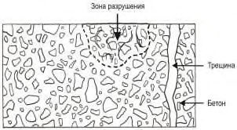
Е.3.2 Типичными областями применения метода 6.3 являются поверхности, подверженные сильному химическому воздействию, предпочтительно, в зонах уплотненных трещин. Возможно применять метод при наличии негативного воздействия воды и ее паров.
Е.3.3 При проектировании ремонта по методу 6.3 следует учитывать раскрытие существующих трещин или появление новых трещин.
Е.3.4 В процессе производства работ следует:
- осуществлять тщательную подготовку поверхности;
- контролировать величину адгезии бетона или раствора, толщину слоя бетона или раствора, температуру и влажность конструкции и т. д.
Е.3.5 Для обеспечения долговечности необходимо проведение осмотров в зависимости от режима эксплуатации.
Е.3.6 Дополняющие методы: методы 3.1-3.3, 1.5.
ЖПриложение Ж. Методы, реализующие принцип 7 - сохранение или восстановление пассивного состояния арматуры в бетоне
Ж.1 Метод 7.1 - Увеличение защитного слоя за счет дополнительного раствора или бетона
Ж.1.1 Метод 7.1 способствует продлению оставшегося срока службы конструкции за счет увеличения периода эксплуатации конструкции до начала коррозии (рисунок Ж.1). Если карбонизация и загрязнение бетона хлоридами отсутствуют, метод 7.1 следует применять до тех пор, пока фронт карбонизации не достиг арматуры, т. е. при наличии определенной толщины некарбонизированного бетона над арматурой. Если бетон находится под воздействием хлоридов, метод 7.1 следует применять только при наличии определенного расстояния между глубиной с критическим уровнем содержания хлоридов и арматурой.
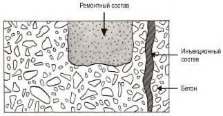
Бетон после ремонта
С1, С2 - защитный слой бетона; X - глубина с критическим уровнем содержания хлоридов или глубина карбонизации;
П - пассивированный участок поверхности без коррозии;
- А-В - участки с коррозией арматуры в следствие:
А - недостаточного защитного слоя бетона;
Б - недостаточного качества бетона;
В - наличия трещин
Рисунок Ж.1 - Схематичное изображение метода 7.1 для коррозии, вызванной воздействием хлоридов
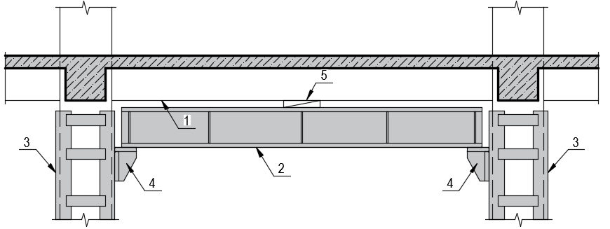
Ж.1.2 Метод 7.1 применяется в целях увеличения толщины защитного слоя и создания барьера, исключающего дальнейшую карбонизацию или проникание хлоридов к арматуре.
- Ж.1.3 Типичными областями применения метода 7.1 являются конструкции с недостаточным защитным слоем бетона на этапе, когда арматура еще сохранила пассивное состояние.
- Ж.1.4 При проектировании ремонта по методу 7.1 следует учитывать перераспределение хлоридов.
- Ж.1.5 В процессе осуществления работ следует:
- обеспечивать тщательную подготовку поверхности;
- контролировать адгезию (прочность сцепления) строительного раствора или бетона;
- контролировать рН дополнительного слоя раствора и бетона, а также рН карбонизированного бетона;
- контролировать количество хлоридов в бетоне основания.
- Ж.1.6 Дополняющие методы: метод 1.5.
- Ж.1.7 Номенклатуру, значения и методы определения показателей свойств материалов и показателей эксплуатационных качеств образуемых систем методом 7.1 принимают по ГОСТ Р 56378.
- Ж.2 Метод 7.2 - Замена загрязненного или карбонизированного бетона
- Ж.2.1 Согласно методу 7.2 весь карбонизированный бетон или бетон с критическим уровнем содержания хлоридов удаляется, выполняется очистка арматуры, а затем подготовленный участок заполняется бетоном (см. рисунок Ж.2).
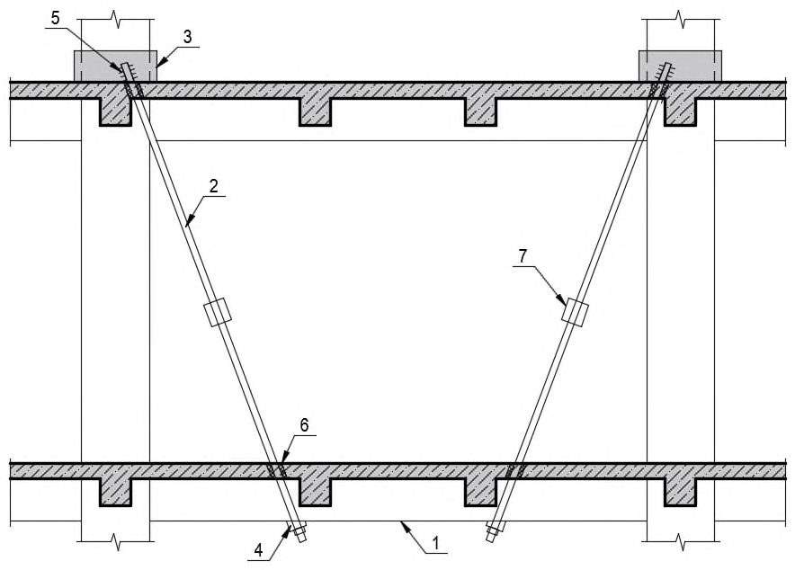
С1, С2 - защитный слой бетона;
X - глубина с критическим уровнем содержания хлоридов или глубина карбонизации;
П - пассивированный участок поверхности без коррозии;
А-В - участки с коррозией арматуры в следствие:
А - недостаточного защитного слоя бетона;
Б - недостаточного качества бетона;
В - наличия трещин
Рисунок Ж.2 - Схематичное изображение метода 7.2 до и после применения
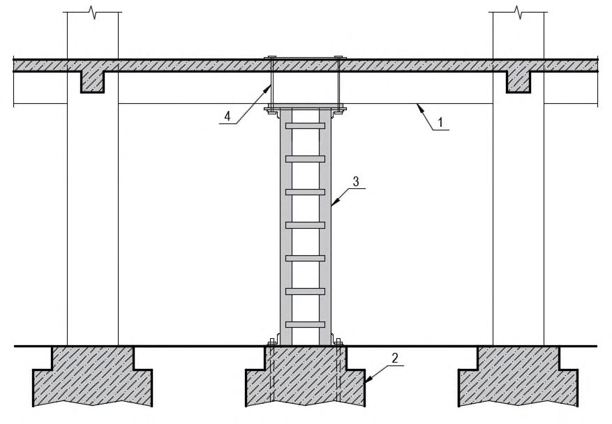
- Ж.2.2 Для реализации метода 7.2 удаляют весь карбонизированный или загрязненный хлоридами бетон, а затем осуществляют укладку нового бетона или раствора, обеспечивающего увеличение щелочи в старом бетоне.
- Ж.2.3 Типичной областью применения метода 7.2 являются бетонные и железобетонные конструкции всех типов, подверженные карбонизации и воздействию хлоридов.
- Ж.2.4 При проектировании ремонта по методу 7.2 следует производить расчет прочности конструкции для обеспечения безопасности работ по созданию новой системы материалов.
Ж.2.5 В процессе осуществления работ следует:
- осуществлять тщательную подготовку поверхности бетона и арматуры;
- контролировать адгезию и прочность бетона;
- контролировать рН и количество хлоридов в бетоне основания.
- Ж.2.6 Дополняющие методы: методы 4.1, 1.3 в качестве системы защиты поверхности обеспечивают долговечность ремонтных работ, особенно при локальном ремонте.
- Ж.2.7 Номенклатуру, значения и методы определения показателей свойств материалов и показателей эксплуатационных качеств образуемых систем методом 7.1 принимают по ГОСТ Р 56378.
- Ж.3 Метод 7.3 - Электрохимическое восстановление щелочности карбонизированного бетона
- Ж.3.1 В условиях карбонизации защитного слоя бетона дополнительная защита от коррозии арматурного каркаса может обеспечиваться повторным электрохимическим подщелачиванием, которое позволяет повысить щелочность карбонизированного бетона и, таким образом, перевести арматуру в пассивное состояние. Использование данного метода схематично показано на рисунке Ж.3.
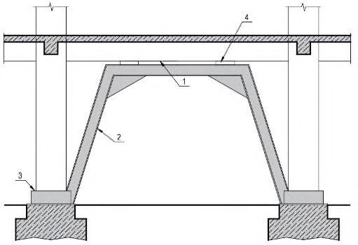
С1, С2 - защитный слой бетона;
X - глубина с критическим уровнем содержания хлоридов или глубина карбонизации;
П - пассивированный участок поверхности без коррозии;
А-В - участки с коррозией арматуры в следствие:
А - недостаточного защитного слоя бетона;
Б - недостаточного качества бетона;
В - наличия трещин
Бетон после ремонта
Рисунок Ж.3 - Схематичное изображение метода 7.3 до и после применения
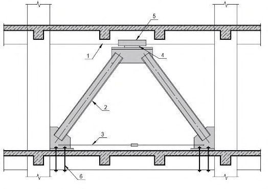
- Ж.3.2 Метод 7.3, реализующий принцип 7 по сохранению или восстановлению пассивного состояния арматуры, осуществляется путем принудительной подачи тока на арматуру в целях повышения значения pH в бетоне вокруг стали.
- Ж.3.3 Типичные области применения метода 7.3 ограничены. Он требует сплошности арматурного каркаса, наличие однородного защитного слоя над арматурой и пр. Не применим в конструкциях с предварительно напряженной арматурой.
- Ж.3.4 При проектировании ремонта по методу 7.3 следует учитывать состояние поверхности основания, величину рН бетона, состояние арматуры, значение подаваемого тока, время обработки и пр.
- Ж.3.5 В процессе производства работ следует:
- соблюдать требования нормативно-технической документации;
- осуществлять контроль качества выполнения работ.
- Ж.3.6 Для обеспечения долговечности основания после обработки необходим контроль карбонизации.
- Ж.3.7 Дополняющие методы: нанесение покрытия по методу 1.3.
- Ж.4 Метод 7.4 - Диффузионное восстановление щелочности карбонизированного бетона Ж.4.1 Метод 7.4 заключается в нанесении нового дополнительного бетона или строительного раствора на поверхность карбонизированного бетона для повторного подщелачивания, которое осуществляется путем диффузии щелочи. Данный подход предусматривает выдерживание бетона во влажных условиях для обеспечения эффективной диффузии щелочи до глубины арматурных стержней в течение периода обработки, который может занимать несколько месяцев. В определенных условиях, на начальной стадии протекания активной карбонизации бетона, возможно осуществлять периодическое подщелачивание специальными щелочными растворами. Использование данного метода схематично показано на рисунке Ж.4.
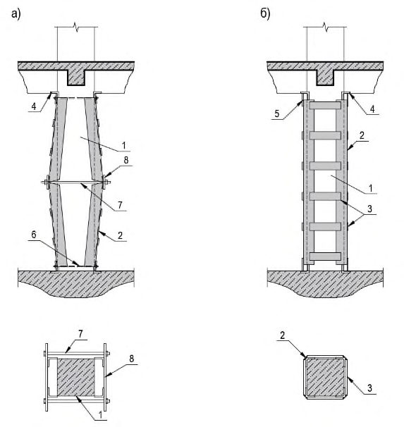
С1, С2 - защитный слой бетона;
X - глубина с критическим уровнем содержания хлоридов или глубина карбонизации;
- П - пассивированный участок поверхности без коррозии;
А-В - участки с коррозией арматуры в следствие:
А - недостаточного защитного слоя бетона;
Б - недостаточного качества бетона;
В - наличия трещин
Рисунок Ж.4 - Схематичное изображение метода 7.4 до и после применения
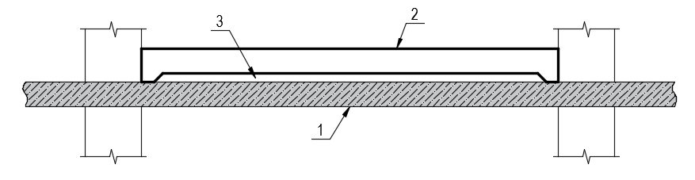
- Ж.4.2 Согласно методу 7.4 повторное подщелачивание карбонизированного бетона путем диффузии проводится нанесением щелочного раствора или бетона на поверхность конструкции для повышения значения pH в зоне карбонизации за счет диффузии OH - .
- Ж.4.3 Типичной областью применения метода 7.4 являются все типы карбонизированных бетонных и железобетонных конструкций.
- Ж.4.4 При проектировании ремонта по методу 7.4 следует учитывать достаточную толщину слоя раствора/бетона, размеры зоны карбонизации, рН бетона.
- Ж.4.5 Требования к материалам и системам по методу 7.4 заключаются в необходимости
- применять высокощелочные растворы и составы на основе цемента с высоким значением pH.
- Ж.4.6 В процессе выполнения работ необходимо:
- обеспечивать достаточное сцепление с существующим бетоном;
- контролировать толщину и адгезию бетона или строительного раствора, рН бетона.
- Ж.4.7 Дополняющие методы: не требуются.
- Ж.5 Метод 7.5 - Электрохимическое извлечение хлоридов
- Ж.5.1 В случаях, когда арматура находится в загрязненном хлоридами бетоне, дополнительная защита от коррозии обеспечивается путем электрохимического извлечения хлоридов. Это приводит к снижению концентрации ионов хлоридов в бетоне, окружающем арматуру, и обеспечивает пассивацию при условии достаточного удаления хлоридов. Использование данного метода схематично показано на рисунке Ж.5.
Рисунок Ж.5 - Схематичное изображение метода 7.5 до и после применения
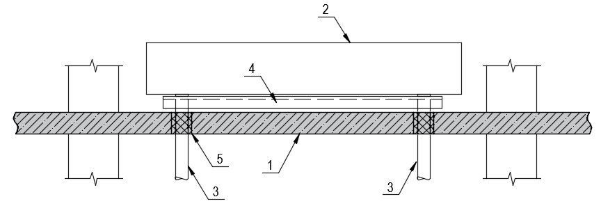
Ж.5.2 Сохранение или восстановление пассивного состояния арматуры в бетоне конструкции (метод 7.5) осуществляется путем временного воздействия электрического тока, вызывающего принудительное перемещение хлоридов из бетона, при помощи анодной сетки, расположенной в электролите, и катода, в роли которого выступает арматурный каркас.
Ж.5.3 Типичными областями применения метода 7.5 являются конструкции, в которых невозможен демонтаж бетона или постоянная подача электропитания, при наличии сплошного арматурного каркаса с нормальным коэффициентом армирования. Не применим в конструкциях с напряженной арматурой. Малоэффективен при высоком коэффициенте армирования и значительном загрязнении (более 1 %) бетона хлоридами.
- Ж.5.4 Требования к материалам и системам необходимо учитывать в соответствии с нормативно-технической документацией и состоянием конструкции.
- Ж.5.5 Контроль качества выполнения работ следует проводить в соответствии с нормативно-технической документацией. К основным мерам относится измерение потенциала, оценка рН и количества хлоридов в бетоне.
- Ж.5.6 Для обеспечения долговечности нужно измерение остаточного содержания хлоридов после обработки поверхности. В случае, если уровни хлоридов слишком высоки, рекомендуется обеспечить мониторинг коррозии.
- Ж.5.7 Дополняющие методы: нанесение покрытия (метод 1.3).
- Ж.5.8 При проектировании ремонта по методу 7.5. следует руководствоваться нормативно-технической документацией и ГОСТ Р 52804. Если остаточные уровни содержания хлоридов слишком высоки, то требуется использование дополнительных методов.
ИПриложение И. Методы, реализующие принцип 8 - повышение электрического сопротивления бетона конструкции
И.1Метод 8.1 - Гидрофобизирующая пропитка
И.1.1 Метод гидрофобизирующей пропитки применяется для различных принципов ремонта бетонных и железобетонных конструкций. Контроль уровня влаги применительно к коррозии бетона выполняется методом 2.1, а применительно к коррозии арматуры - методом 8.1. Для использования обоих методов необходимо исключить проникание воды в конструкцию и дать бетону просохнуть путем испарения влаги через гидрофобный слой, как это показано на рисунке И.1.
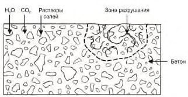
Бетон после ремонта
С1,С2 - защитный слой бетона; X - глубина с критическим уровнем содержания хлоридов или глубина карбонизации;
П - пассивированный участок поверхности без коррозии;
А-В - участки с коррозией арматуры в следствие:
А - недостаточного защитного слоя бетона;
Б - недостаточного качества бетона;
В - наличия трещин
Рисунок И.1 - Схематичное изображение метода 8.1 после применения
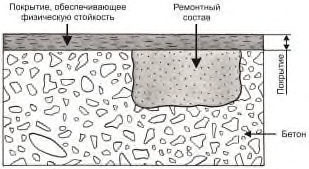
- И.1.2 Гидрофобизирующая пропитка (метод 8.1) обеспечивает уменьшение скорости коррозии арматуры путем просушивания бетона и последующего повышения удельного электрического сопротивления.
- И.1.3 Типичной областью применения метода 8.1 является защита от коррозии арматуры бетонных и железобетонных конструкций на раннем этапе карбонизации.
- И.1.4 При проектировании ремонта по методу 8.1 следует учитывать, что по мере высыхания конструкции после гидрофобизирующей пропитки коррозия сначала продолжается, а затем постепенно замедляется.
И.1.5 В процессе осуществления работ следует:
- выполнять тщательную подготовку поверхности;
- обеспечивать минимальную влажность поверхности бетона;
- выявлять большую глубину проникания пропитки;
- контролировать гидрофобность поверхности конструкции.
- И.1.6 Для обеспечения долговечности нужно проведение регулярных осмотров и выполнение испытаний на смачивание.
- И.1.7 Дополняющие методы: метод 1.5, а также методы с 3.1 по 3.3.
- И.1.8 Номенклатуру, значения и методы определения показателей свойств материалов и показателей эксплуатационных качеств образуемых систем методом 8.1 принимают по ГОСТ 32017.
И.2Метод 8.2 - Пропитка
- И.2.1 Аналогично контролю уровня влаги применительно к коррозии бетона (метод 2.2) метод пропитки применяется для повышения удельного сопротивления бетона и снижения скорости коррозии арматуры до безопасного уровня. Для достижения высокой степени заполнения пор пропиточным материалом следует провести подготовку поверхности бетона, как показано на рисунке И.2. На участках с разрушенным бетоном выполняется его восстановление и уплотнение трещин.
Бетон после ремонта
С1, С2 - защитный слой бетона; X - глубина с критическим уровнем содержания хлоридов или глубина карбонизации;
П - пассивированный участок поверхности без коррозии;
А-В - участки с коррозией арматуры в следствие:
А - недостаточного защитного слоя бетона;
Б - недостаточного качества бетона;
В - наличия трещин
Рисунок И.2 - Схематичное изображение метода 8.2 после применения
- И.2.2 Пропитка (метод 8.2) обеспечивает заполнение пор в поверхностном слое бетона для снижения содержания воды, повышение удельного сопротивления бетона и снижение скорости коррозии арматуры.
- И.2.3 Типичными областями применения метода 8.2 являются полы и другие горизонтальные поверхности.
- И.2.4 При проектировании ремонта по методу 8.2. следует учитывать:
- отсутствие защиты при раскрытии существующих трещин или образовании новых;
- уменьшение скорости коррозии по мере просушки поверхности бетона.
- И.2.5 В процессе выполнения работ следует:
- осуществлять тщательную подготовку поверхности;
- обеспечивать минимальную влажность поверхность бетона;
- контролировать глубину проникания пропиточного состава и толщину образуемой пленки.
- И.2.6 Метод 8.2 обладает высокой степенью долговечности, зависящей от интенсивности эксплуатации.
- И.2.7 Дополняющие методы: методы 1.5 и 3.1-3.3.
- И.2.8 Номенклатуру, значения и методы определения показателей свойств материалов и показателей эксплуатационных качеств образуемых систем методом 8.2 принимают по ГОСТ 32017.
И.3Метод 8.3 - Покрытие
- И.3.1 Системы покрытий используются в больших объемах, поскольку их характеристики адаптируются практически к любым фактическим условиям применения. Для обеспечения повышенного удельного сопротивления бетона путем его просушки системы покрытия должны быть непроницаемыми для воды и, по возможности, максимально открытыми для испарения водяных паров из бетона. Использование данного метода схематично показано на рисунке И.3.
С1, С2 - защитный слой бетона;
X - глубина с критическим уровнем содержания хлоридов или глубина карбонизации;
П - пассивированный участок поверхности без коррозии;
А-В - участки с коррозией арматуры в следствие:
А - недостаточного защитного слоя бетона;
Б - недостаточного качества бетона;
В - наличия трещин
Рисунок И.3 - Схематичное изображение метода 8.3 до и после применения
- И.3.2 Нанесение системы покрытия по методу 8.3, предотвращающего проникание воды и обеспечивающего возможность испарения воды из бетона, применяется в целях повышения удельного сопротивления бетона и ограничения скорости коррозии арматуры.
- И.3.3 Типичными областями применения метода 8.3 являются:
- предотвращение коррозии вследствие карбонизации;
- замедление коррозии, обусловленной воздействием хлоридов (данный метод применим на раннем этапе при низком уровне содержания хлоридов).
- И.3.4 В процессе выполнения работ следует:
- осуществлять тщательную подготовку поверхности;
- контролировать требуемый уровень влажности и температуру бетона;
- обеспечивать минимальную толщину покрытия;
- определять значение адгезии покрытия к бетону, толщина покрытия, сопротивление бетона, рН и количество хлоридов.
- И.3.5 Для обеспечения долговечности рекомендуется проведение осмотров в зависимости от режима эксплуатации, осуществление контролирующих мероприятий.
- И.3.6 Дополняющие методы: метод 1.5, а также методы 3.1-3.3.
- И.3.7 Номенклатуру, значения и методы определения показателей свойств материалов и показателей эксплуатационных качеств образуемых систем методом 8.3 принимают по ГОСТ 32017.
КПриложение К. Методы, реализующие принцип 9 - контроль анодных участков арматурного каркаса в бетоне
К.1Метод 9.1 - Покрытие арматуры активного (пассивирующего) типа
- К.1.1 Нанесение на арматуру активного (пассивирующего) покрытия по всей площади поверхности предусматривает обнажение арматуры в глубину на 20 мм для обеспечения пространства вокруг арматурных стержней, достаточного для производства работ. Перед нанесением покрытия следует тщательно очистить поверхность арматуры от продуктов коррозии. Метод 9.1 схематично показан на рисунке К.1.
- К.1.2 Типичными областями применения метода 9.1 являются конструкции при отсутствии достаточного защитного слоя бетона или невозможности его обеспечения, а также временная защита вскрытой арматуры.
- К.1.3 В процессе производства работ следует:
- осуществлять тщательную очистку арматуры;
- контролировать нанесение покрытия;
- следить за толщиной и равномерностью слоя активного покрытия;
- проводить контроль состояния арматурного каркаса в бетоне.
Рисунок К.1 - Схематичное изображение метода 9.1 после применения
- К.1.4 Для обеспечения долговечности нужно проведение регулярных осмотров арматурного каркаса перед ремонтом и выполнение контроля коррозионного состояния арматуры в бетоне.
- К.1.5 Дополняющие методы: рекомендуется метод 1.3.
- К.2 Метод 9.2 - Покрытие арматуры барьерного (защитного) типа
- К.2.1 Покрытия барьерного (защитного) типа обеспечивают электрическую изоляцию и предотвращают анодное растворение железа, а также катодную реакцию (восстановление кислорода). Указанные свойства достигаются, например, при использовании покрытий на основе эпоксидных смол. На рисунке К.2 схематично показано применение данного метода. Аналогично методу 9.1 арматуру следует очистить от бетона на глубину более 20 мм, от продуктов коррозии и нанести на нее покрытие. После этого конструкция восстанавливается подходящим строительным раствором или бетоном.
- К.2.2 Типичными областями применения метода 9.2 являются конструкции с отсутствием достаточного защитного слоя бетона или невозможности его обеспечения, а также временная защита арматуры, остававшейся незащищенной в течение длительного периода времени.
- К.2.3 При проектировании ремонта по методу 9.2 следует учитывать риск возникновения коррозии под покрытием в случае недостаточного качества и наличия в покрытии трещин и т.
Рисунок К.2 - Схематичное изображение метода 9.2 после применения
д.
- К.2.4 В процессе производства работ следует:
- осуществлять тщательную очистку арматуры;
- обеспечивать равномерное нанесение покрытия;
- контролировать толщину и сплошность наносимого покрытия, значения адгезии к арматуре и т. д.;
- улучшить сцепление покрытия арматуры с ремонтным составом;
- следить за состоянием арматурного каркаса в бетоне.
- К.2.5 Для обеспечения долговечности необходимо проведение регулярных осмотров и выполнение контроля коррозионного состояния арматуры в бетоне.
- К.2.6 Дополняющие методы: метод 9.1 и 1.3.
- К.3. Метод 9.3 - Введение в бетон или нанесение на бетон ингибиторов коррозии
- К.3.1 Метод 9.3 предусматривает два способа использования ингибиторов коррозии при ремонте железобетонных конструкций (рисунки К.3 и К.4). Ингибиторы наносят на поверхность бетона (метод 9.3-1) или смешивают с ремонтными растворами (метод 9.3-2).
Рисунок К.3 - Схематичное изображение метода 9.3-1 после применения
Рисунок К.4 - Схематичное изображение метода 9.3-2 после применения
- К.3.2 Типичной областью применения метода 9.3 является защита арматуры конструкций от коррозии в дополнение к другим методам на раннем этапе коррозии.
- К.3.3 Для проектирования ремонта по методам 9.3-1 и 9.3-2 проводят испытания участков конструкции с целью определения эффективности и оценки долговечности работ в конкретных условиях (контролируются состояние бетона и арматурного каркаса, условия окружающей среды и пр.).
- К.3.4 В процессе осуществления работ следует применять ингибиторы по технологии, указанной в спецификациях на материалы.
- К.3.5 Контроль качества работ и отработку технологии необходимо осуществлять на пробных участках конструкций.
- К.3.6 Для обеспечения долговечности конструкций нужно проведение регулярных осмотров и выполнение контроля коррозионного состояния арматуры в бетоне.
- К.3.7 Дополняющие методы: метод 1.3 (нанесение покрытий).
Библиография
- [1] Федеральный закон от 30 декабря 2009 г. № 384-ФЗ «Технический регламент о безопасности зданий и сооружений»
- [2] Федеральный закон от 22 июля 2008 г. № 123-ФЗ «Технический регламент о требованиях пожарной безопасности»
- [3] Федеральный закон от 27 декабря 2002 г. № 184-ФЗ «О техническом регулировании»
- [4] СП 13-102-2003 Правила обследования несущих строительных конструкций зданий и сооружений
- [5] СНиП 12-03-2001 Безопасность труда в строительстве. Часть 1. Общие требования
- [6] СНиП 12-04-2002 Безопасность труда в строительстве. Часть 2. Строительное производство
- [7] П 85-2001 Рекомендации по анализу данных и проведению натурных наблюдений за напряженно-деформированным состоянием, раскрытием швов и трещин в бетонных и железобетонных сооружениях
- [8] ОДМ 218.3.001-2010 Рекомендации по диагностике активной коррозии арматуры в железобетонных конструкциях мостовых сооружений на автомобильных дорогах методом потенциалов полуэлемента
- [9] ГН 2.2.5.1313-03 Химические факторы производственной среды. Предельно допустимые концентрации (ПДК) вредных веществ в воздухе рабочей зоны
- [10] ГН 2.2.5.2308-07 Ориентировочные безопасные уровни воздействия (ОБУВ) вредных веществ в воздухе рабочей зоны
- [11] СН 2.2.4/2.1.8.562-96 Шум на рабочих местах, в помещениях жилых, общественных зданий и на территории жилой застройки
- [12] СН 2.2.4/2.1.8.566-96 Производственная вибрация, вибрация в помещениях жилых и общественных зданий
- [13] МИ 41-88 Методические указания. Государственная система обеспечения единства измерений. Методика выполнения измерений параметров шероховатости поверхности по ГОСТ 2789-73 при помощи приборов профильного метода Ответственный исполнитель ЗАО "Триада-Холдинг", к.т.н. Зайцев М.В. Ответственный исполнитель ЗАО "Триада-Холдинг", к.т.н. Картузов Д.В. Ответственный исполнитель ЗАО "Триада-Холдинг", ст.инж. Щукина А.Б. Ответственный исполнитель ЗАО "Триада-Холдинг", инж. Боган Д.В.